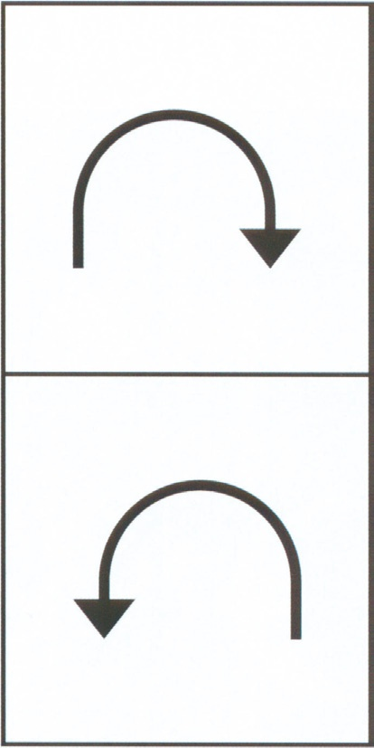
| 選択肢 | 解説 |
|---|---|
| ａ 安 静 | 安静でめまい発作そのものは収まるが、卵形囊から剝がれて半規管に迷い込んだ耳石はそこに留まったままなので、起き上がるたびに再発する。急性期に嘔吐が激しければ一時的に臥床させるが、臥床を続けると耳石が固定して長引くため治療とは呼べない。 |
| ◯ ｂ 耳石置換法 | ◯ BPPVの原因そのもの（半規管内の浮遊耳石）を物理的に追い出す治療。Epley法（後半規管型）・Lempert法（外側半規管型）など、頭を決まった順序で回して耳石を半規管から卵形囊へ戻す。薬も手術も要らず、1回の施行で多くが軽快する。 |
| ｃ 利尿薬投与 | Ménière病（内リンパ水腫）の治療。イソソルビドで内リンパの水を引かせる発想であり、耳石が転がっているBPPVには効かない。本例は難聴・耳鳴がないのでMénière病は否定される。 |
| ｄ 内リンパ囊開放術 | 保存治療に抵抗するMénière病に行う手術。これも内リンパ水腫を減圧する目的で、BPPVには適応がない。 |
| ｅ グルココルチコイド投与 | 突発性難聴・前庭神経炎の急性期に用いる。いずれも内耳や前庭神経の炎症・浮腫を想定した治療で、機械的に耳石が動いて起こるBPPVの機序とは噛み合わない。 |
| 持続時間 | 疾患 | 難聴・耳鳴 | 決め手 |
|---|---|---|---|
| 数秒〜1分 | BPPV | なし | 頭位変換で誘発、反復するが減衰 |
| 10分〜数時間 | Ménière病 | あり（変動性・低音障害型） | 発作を反復、耳閉感 |
| 数日〜数週 | 前庭神経炎 | なし | 先行する上気道感染、一方向性の自発眼振 |
| 数分（一過性） | 椎骨脳底動脈循環不全・TIA | なし | 他の脳神経症状を伴う |
| 持続性・進行性 | 聴神経腫瘍 | あり（進行性・一側性） | ふらつきが主、回転性は軽い |
| 選択肢 | 解説 |
|---|---|
| ａ 耳鳴は伴わないことが多い。 | 逆で、耳鳴はしばしば伴う。有毛細胞が抜け落ちた周波数帯では中枢が入力の欠損を「音」として埋めてしまうため、高音性の持続する耳鳴（キーン、セミの声）を訴えることが多い。 |
| ◯ ｂ 聴力低下は高音から始まる。 | ◯ 蝸牛基底回転（高音を担当）の有毛細胞から失われる。蝸牛は入口（基底回転）が高音、奥（頂回転）が低音を担当し、基底回転は音響エネルギーに最も曝され血流も乏しいため先に脱落する。オージオグラムは高音漸傾型（4,000Hz以降で大きく落ちる）になる。 |
| ｃ 伝音難聴を示すことが多い。 | 感音難聴である。障害の座は蝸牛の有毛細胞・らせん神経節・中枢聴覚路で、鼓膜も耳小骨も正常だから気骨導差は出ない。 |
| ｄ 補聴器の使用は極力避ける。 | むしろ積極的に勧める。難聴を放置するとコミュニケーションが減り、社会的孤立・抑うつ・認知機能低下につながることが知られている。補充現象があるので大きすぎる音は苦痛——出力制限のある補聴器を専門医のもとで調整して使う。 |
| ｅ 純音聴力検査で左右非対称性の難聴を示す。 | 加齢は両耳に等しく起こるので左右対称が原則。明らかな左右差があれば老人性難聴では説明できず、聴神経腫瘍・突発性難聴などを疑って精査する。 |
| 場面 | やること | 理由 |
|---|---|---|
| 話しかける | 正面から近づいて、ややゆっくり、低めの声で | 高音が落ちている＋読唇と表情が補助になる。大声は補充現象で苦痛になるだけ |
| 左右差がある | 聴神経腫瘍・突発性難聴を疑って画像と精査へ | 加齢は両側対称。非対称は「別の病気が乗っている」合図 |
| 補聴器 | 早期から導入し、出力制限をかけて調整 | 放置は社会的孤立・認知機能低下のリスク。ボリュームを上げるだけでは補充現象で不快 |
| 選択肢 | 解説 |
|---|---|
| ａ 口角の下垂 | 顔面神経（下顎縁枝・頬筋枝）の麻痺で口輪筋・頬筋が弛緩して起こる。食事中に口から食物がこぼれ、水を飲むとむせる。Bell麻痺の典型症状。 |
| ｂ 前頭筋の麻痺 | 前額のしわ寄せができなくなる＝末梢性顔面神経麻痺の決定的所見。前頭筋は左右両側の大脳から神経支配を受けるため、中枢性（脳卒中）では前額が残る。前額が動かない＝核・核下（末梢性）という鑑別の要になる。 |
| ｃ 聴覚過敏 | アブミ骨筋を支配する枝（アブミ骨筋神経）の麻痺で起こる。アブミ骨筋は大きな音が来たとき耳小骨連鎖を固くして内耳を守る（アブミ骨筋反射）が、麻痺するとその制動が効かず音が響いて苦しい。病変が膝神経節より末梢でもアブミ骨筋神経の分岐より中枢なら出る——障害部位診断の材料になる。 |
| ◯ ｄ 複 視 | ◯ これが誤り。複視は外眼筋（動眼・滑車・外転神経）の障害で起こる。顔面神経が動かすのは眼輪筋（＝閉眼）であって、眼球を動かす筋ではない。したがってBell麻痺では閉眼不能（兎眼）は出るが複視は出ない。複視があれば脳幹病変・海綿静脈洞病変・重症筋無力症などを考える。 |
| ｅ 味覚障害 | 鼓索神経（舌前2/3の味覚）の障害で起こる。鼓索神経は顔面神経から分かれて鼓室内を横切るため、顔面神経管内の病変で容易に巻き込まれる。「顔が動かない＋舌の前が味がしない」はセットで問われる。 |
| 末梢性（Bell麻痺など） | 中枢性（脳卒中など） | |
|---|---|---|
| 前額のしわ寄せ | できない（麻痺する） | できる（残る） |
| 閉眼 | できない（兎眼・Bell現象） | おおむね可能 |
| 味覚・聴覚過敏・涙分泌 | 障害されうる | 障害されない |
| 他の神経症状 | 基本的になし | 片麻痺・構音障害などを伴う |
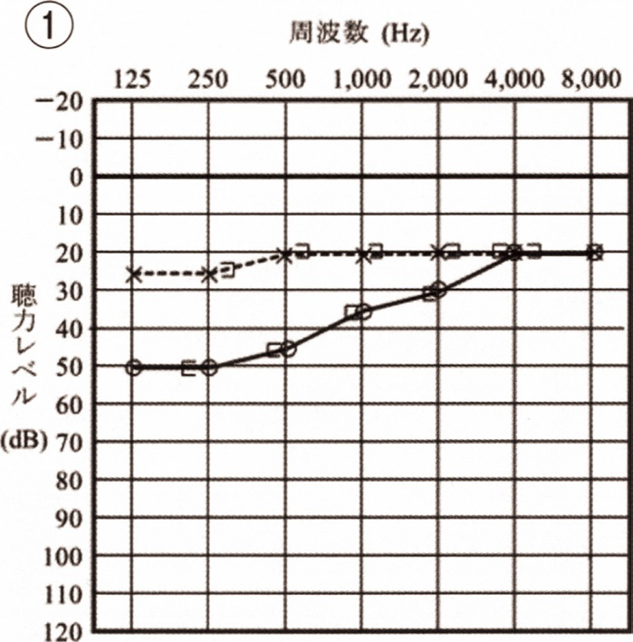
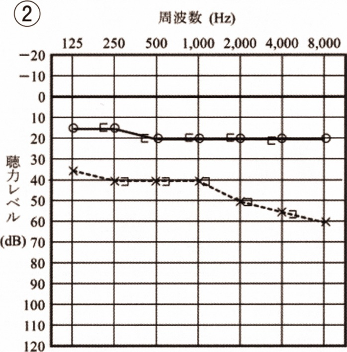
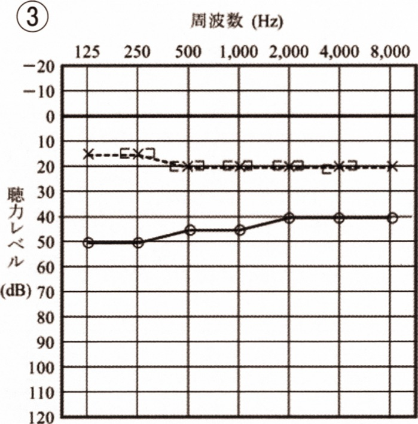
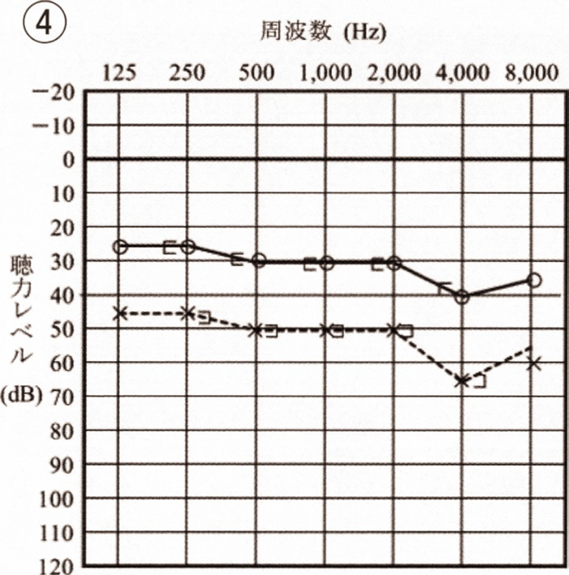
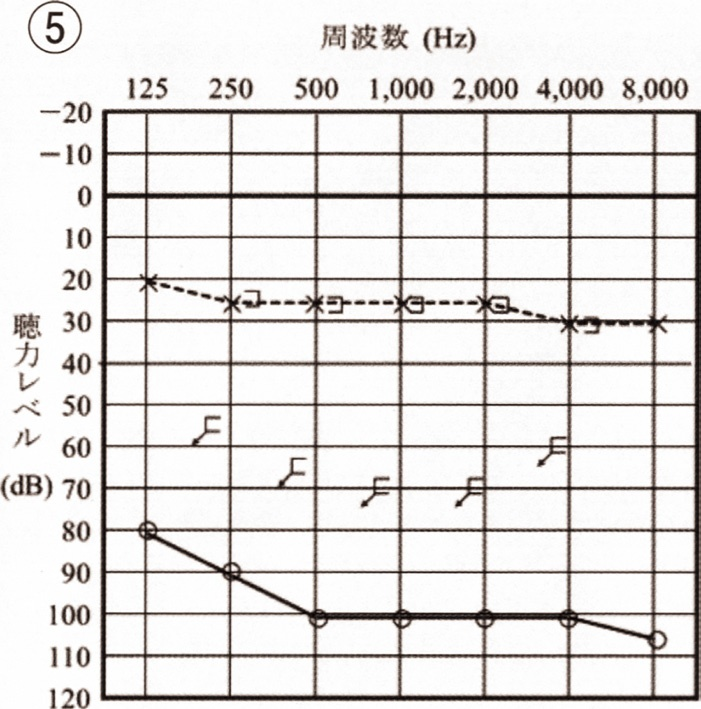
| 選択肢 | 解説 |
|---|---|
| ◯ ａ ① | ◯ 右気導が125Hzで50dB、高音へ向かって改善して4,000Hz以降は20dBに戻る「低音障害型」で、右骨導も気導に一致している＝右の感音難聴。左は20dB前後で正常。一側性・低音障害型の感音難聴＝Ménière病の典型像。 |
| ｂ ② | 左が高音になるほど悪くなる高音漸傾型の感音難聴で、右は正常。老人性難聴・騒音性難聴などの型であり、Ménière病の初期に典型的な「低音が悪い」形とは逆。 |
| ｃ ③ | 右の気導が50〜40dBなのに骨導は20dBに留まる＝気骨導差のある伝音難聴。耳硬化症や中耳炎の型で、Ménière病は内耳の病気なので気骨導差は生じない。 |
| ｄ ④ | 両側とも4,000Hzに落ち込みを示す。両側性のdip＝騒音性難聴のパターンで、一側性のめまい・耳鳴という病歴と合わない。 |
| ｅ ⑤ | 右の気導が80〜105dBと高度に低下し、骨導は60〜70dBで気骨導差もある混合性難聴。慢性中耳炎の進行例などの像で、6か月で反復するだけのMénière病がここまで落ちるのは典型的でない。 |
| 型 | 典型疾患 | 気骨導差 |
|---|---|---|
| 低音障害型（低音だけ悪い） | Ménière病・急性低音障害型感音難聴 | なし |
| 高音漸傾型（高音ほど悪い） | 老人性難聴・薬剤性 | なし |
| 4,000Hzのdip（C5 dip） | 騒音性難聴・音響外傷 | なし |
| 水平型で気骨導差あり | 耳硬化症・滲出性中耳炎 | あり |
| 2,000Hz付近の骨導のdip | 耳硬化症（Carhart notch） | あり |
| 選択肢 | 解説 |
|---|---|
| ａ アデノウイルス | 咽頭結膜熱・流行性角結膜炎・出血性膀胱炎などの原因。内耳を侵す性質はない。 |
| ｂ Epstein-Barr〈EB〉ウイルス | 伝染性単核球症・Burkittリンパ腫・上咽頭癌と関係する。難聴の原因ウイルスとしては挙がらない。 |
| ｃ 単純ヘルペスウイルス | 口唇ヘルペス・性器ヘルペス・ヘルペス脳炎、そしてBell麻痺の一因とされるが、感音難聴を直接起こす代表ウイルスではない。 |
| ｄ 風疹ウイルス | 難聴を起こすが「先天性」である。妊娠初期の母体感染で先天性風疹症候群（難聴・白内障・心奇形）を生じる。設問は「後天性」を問うているので当てはまらない。 |
| ◯ ｅ ムンプスウイルス | ◯ 流行性耳下腺炎（おたふくかぜ）に伴うムンプス難聴。一側性・高度〜聾レベルの感音難聴が突然起こり、ほぼ回復しない。小児の後天性一側性高度難聴の最大の原因で、発症率は不顕性感染を含めると数百〜千人に1人とされる。予防はMMR/ムンプスワクチン。 |
| 病原体 | 時期 | 難聴の特徴 |
|---|---|---|
| ムンプスウイルス | 後天性（小児） | 一側性・高度・不可逆 |
| サイトメガロウイルス | 先天性 | 両側性・進行性（出生時正常でも後に悪化） |
| 風疹ウイルス | 先天性 | 両側性・白内障と心奇形を伴う |
| 水痘・帯状疱疹ウイルス | 後天性 | Ramsay Hunt症候群として顔面神経麻痺・めまいと同時に |
| 細菌性髄膜炎 | 後天性（乳幼児） | 両側性・高度。蝸牛骨化を起こすので人工内耳は早期に |
| 選択肢 | 解説 |
|---|---|
| ａ 再発することが多い。 | 通常は一度きりで反復しない。反復するめまい＝Ménière病・BPPVであり、ここが前庭神経炎との重要な分かれ目になる。 |
| ｂ 垂直性の眼振を認める。 | 末梢前庭障害の眼振は水平（回旋成分を伴う）で一方向性。純粋な垂直性眼振・注視方向性眼振は中枢性（脳幹・小脳）を示唆し、めまい診療では「垂直眼振＝中枢を疑え」が鉄則である。 |
| ｃ 頭痛をともなう。 | 頭痛は伴わない。激しいめまいに頭痛が加わったら小脳出血・小脳梗塞・椎骨動脈解離を真っ先に除外する。 |
| ｄ 難聴をともなう。 | 障害されるのは前庭神経だけで、蝸牛神経は保たれる＝難聴も耳鳴も出ない。これがMénière病・突発性難聴との決定的な差である。（めまい＋難聴なら内耳全体または蝸牛が巻き込まれている。） |
| ◯ ｅ 吐き気をともなう。 | ◯ 激しい回転性めまいには強い悪心・嘔吐が必発。前庭神経核は迷走神経背側核・最後野（嘔吐中枢）と密に連絡しており、左右の前庭入力が急に不均衡になると自律神経症状が前面に出る。発作の激しさゆえ数日は立てず、点滴と制吐薬が必要になることが多い。 |
| 所見 | 意味 |
|---|---|
| 垂直性眼振・注視方向交代性眼振 | 中枢性（脳幹・小脳） |
| 頭痛・後頸部痛 | 小脳出血・椎骨動脈解離 |
| 構音障害・嚥下障害・複視・顔面の感覚障害 | 脳幹（Wallenberg症候群など） |
| 四肢の運動失調・体幹失調で立てない | 小脳梗塞 |
| 頭部インパルス試験が陰性（＝正常）なのに眼振がある | 中枢性（HINTS） |
| 選択肢 | 解説 |
|---|---|
| ａ 水分制限 | むしろ逆で、近年は十分な水分摂取（水分負荷療法）が推奨される。水を多めに摂ると抗利尿ホルモンが下がり、内リンパ水腫がかえって軽減することが示されている。生活指導としては減塩・十分な睡眠・ストレス回避が柱になる。 |
| ｂ 頭位治療 | BPPVに対する耳石置換法のこと。本例は30分持続し、耳鳴・耳閉感・感音難聴を伴うのでBPPVではない（BPPVは数十秒・難聴なし）。 |
| ◯ ｃ 利尿薬投与 | ◯ Ménière病の薬物治療の中心＝浸透圧利尿薬イソソルビド。内リンパの過剰な水を血管側へ引き込んで水腫を軽減する。発作予防としてベタヒスチン（内耳循環改善）や、急性期には制吐薬・抗めまい薬・重症例では副腎皮質ステロイドを併用する。 |
| ｄ 抗ウイルス薬投与 | Ramsay Hunt症候群（水痘・帯状疱疹ウイルス）に用いる。本例には耳介の水疱も顔面神経麻痺もない。 |
| ｅ ガンマグロブリン投与 | 川崎病・免疫不全・重症感染症などに用いる製剤で、Ménière病には適応がない。 |
| 所見 | 読み方 |
|---|---|
| 約30分持続する回転性めまいを反復 | 秒単位のBPPV、数日続く前庭神経炎のいずれでもない |
| 右の耳閉感・耳鳴・中等度感音難聴 | 蝸牛症状を伴う＝内耳全体の病変。前庭神経炎は否定 |
| 鼓膜正常 | 中耳炎・真珠腫を除外 |
| 左向き水平眼振 | 右（患側）の前庭機能が落ちて健側向きの眼振。末梢性と矛盾しない |
| 頭部MRIで異常なし | 聴神経腫瘍・小脳橋角部病変を除外した |
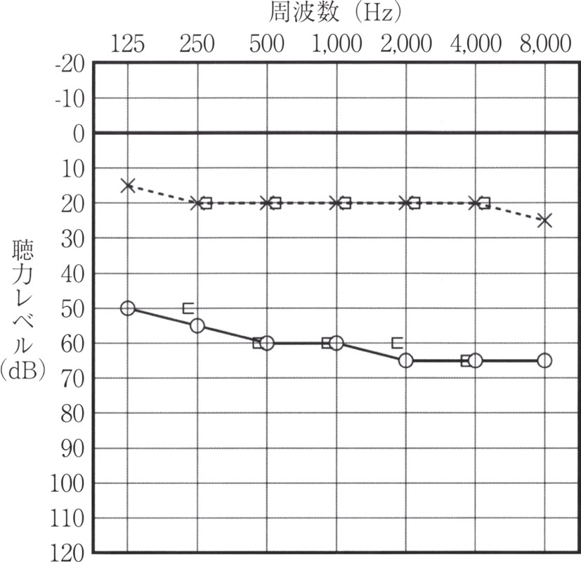
| 選択肢 | 解説 |
|---|---|
| ａ 抗菌薬 | 細菌感染がない。鼓膜は正常で発熱も耳痛もなく、中耳炎を示す所見が一つもない。 |
| ｂ 利尿薬 | Ménière病の治療。Ménière病はめまい発作を反復し、難聴が変動するのに対し、本例は突然の一回きりで、めまいもない。 |
| ｃ 抗ウイルス薬 | Ramsay Hunt症候群には必須だが、突発性難聴に対するルーチンの併用は有効性が確立していない。本例には耳介の水疱も顔面神経麻痺もない。 |
| ｄ ガンマグロブリン | 突発性難聴の治療薬ではない。 |
| ◯ ｅ 副腎皮質ステロイド | ◯ 突発性難聴の治療の中心。プレドニゾロンの全身投与（漸減）を可及的早期に開始する。糖尿病などで全身投与が難しい例では鼓室内ステロイド注入を選ぶ。発症から2週間以内、できれば1週間以内の開始が予後を左右する。 |
| 疾患 | 区別の決め手 |
|---|---|
| Ménière病 | めまいと難聴を反復する（突発性難聴は一回きり） |
| 聴神経腫瘍 | MRIで内耳道の腫瘤。突発性難聴様に発症することがあるのでMRIは必須 |
| 外リンパ瘻 | 力み・気圧変化・外傷が誘因。「パチン」という音、外耳道加圧で眼振が誘発される |
| ムンプス難聴 | 耳下腺腫脹の既往、小児 |
| 急性低音障害型感音難聴 | 低音のみの障害・再発しやすい・予後良好 |
| 選択肢 | 解説 |
|---|---|
| ａ 慢性中耳炎 | 伝音難聴または混合性難聴になり、耳漏・鼓膜穿孔という所見が残る。本例は高度「感音」難聴であり合致しない。 |
| ◯ ｂ 流行性耳下腺炎 | ◯ 2歳時の耳下腺炎＝ムンプス。ムンプス難聴である。新生児スクリーニングは正常だった＝先天性ではない（後天性）、一側性・高度感音難聴、本人も家族も気づかず健診で発見——すべてがムンプス難聴の典型像に一致する。 |
| ｃ 先天性風疹症候群 | 先天性なので新生児聴覚スクリーニングで引っかかるはず。また両側性で、白内障・心奇形など他の異常を伴うのが普通である。 |
| ｄ 低酸素性虚血性脳症 | 新生児仮死の既往が前提だが、本例は「既往なし」と明記されている。また難聴を残す場合は両側性で、発達の遅れを伴うことが多い。 |
| ｅ Treacher Collins症候群 | 第1・第2鰓弓の発生異常による先天奇形症候群。下顎低形成・頬骨低形成・眼瞼裂の外下方傾斜・外耳奇形という特徴的な顔貌があり、難聴は外耳道閉鎖に伴う伝音難聴が主。本例には奇形の記載がない。 |
| 手がかり | 示すもの |
|---|---|
| 新生児聴覚スクリーニングが正常 | 先天性難聴を除外できる＝後天性 |
| 一側性 | ムンプス・外傷・聴神経腫瘍（先天性は両側が多い） |
| 両側性・進行性 | 先天性サイトメガロウイルス感染（出生時スクリーニングを通過しても後で悪化する） |
| 伝音難聴 | 滲出性中耳炎（小児で最多）・外耳道閉鎖・耳小骨奇形 |
| 髄膜炎の既往 | 両側高度難聴＋蝸牛骨化 → 人工内耳は急ぐ |
| 選択肢 | 解説 |
|---|---|
| ａ 難聴を伴う。 | 伴わない。BPPVは半規管の中で耳石が転がるだけで、音を感じる蝸牛には手が付いていない。難聴・耳鳴があればMénière病・突発性難聴・聴神経腫瘍を考える。 |
| ｂ 小児に好発する。 | 好発は中高年（50〜70歳代）の女性。耳石の脱落は加齢と関係が深く、閉経後の女性で骨代謝（ビタミンD・カルシウム）との関連も指摘されている。小児のめまいはむしろ起立性調節障害・良性発作性めまい・片頭痛関連が多い。 |
| ｃ 一過性の意識消失を伴う。 | 意識は常に清明。意識消失を伴うなら失神（心原性・起立性低血圧・血管迷走神経性）であり、めまいとは別のカテゴリになる。「目の前が暗くなって倒れた」と「天井が回った」を区別して聞き取ること。 |
| ◯ ｄ 頭位変換時に眼振を示す。 | ◯ これがBPPVの定義そのもの。Dix-Hallpike試験（後半規管型）や頭位変換眼振検査で、潜時数秒 → 回旋性眼振が出現 → 20〜30秒で減衰という経過をとる。繰り返すと反応が弱まる（疲労現象）のも末梢性の証拠である。 |
| ｅ 浮遊耳石は半規管由来である。 | 耳石は「耳石器（卵形囊）」由来で、それが剝がれて半規管へ「迷い込む」のがBPPVである。半規管はもともと耳石を持たない（クプラだけがある）。「どこから来て、どこへ入ったか」を逆にした引っかけ。 |
| 手技 | 目的 | ポイント |
|---|---|---|
| Dix-Hallpike試験 | 後半規管型の診断 | 座位から患側へ45°頭を回して素早く懸垂頭位へ。Frenzel眼鏡で固視を外して観察 |
| supine roll test | 外側半規管型の診断 | 仰臥位で頭を左右に転がす。方向交代性の水平眼振 |
| Epley法 | 後半規管型の治療 | 耳石を管から卵形囊へ送り返す。1回で多くが軽快 |
| Lempert法（barbecue rotation） | 外側半規管型の治療 | 体ごと360°転がす |
| 選択肢 | 解説 |
|---|---|
| ａ 耳漏の出現 | 外傷性鼓膜穿孔に感染が加わったサインで、点耳・全身抗菌薬で対応する。緊急手術ではなく保存治療の対象である。 |
| ◯ ｂ めまいの増悪 | ◯ 耳かき棒がアブミ骨を押し込み、前庭窓から外リンパが漏れている（外傷性外リンパ瘻・アブミ骨底の骨折/脱臼）ことを意味する。外リンパが漏れ続ける限り内耳は壊れ続けるので、試験的鼓室開放術で瘻孔を確認し閉鎖する——これが数日以内に行うべき緊急手術である。「めまいと感音難聴が進行する」ことが手術適応の根拠になる。 |
| ｃ 味覚障害の出現 | 鼓索神経の損傷を示すが、多くは自然回復し、緊急手術の適応にならない。外傷性鼓膜穿孔では鼓室内を横切る鼓索神経が巻き込まれることがある。 |
| ｄ 鼓膜穿孔の拡大 | 外傷性鼓膜穿孔の大半は数週間で自然閉鎖する。閉鎖しない場合も待機して鼓膜形成術を行えばよく、緊急性はない。 |
| ｅ 気導骨導差の縮小 | 気骨導差が縮まる＝伝音障害が改善しているということで、良い方向の変化である。ただし骨導が下がって差が縮まった場合は内耳障害の進行を意味するので、「差」ではなく骨導そのものの値を見る癖をつける。 |
| 項目 | 内容 |
|---|---|
| 機序 | 前庭窓・蝸牛窓の破綻で外リンパが中耳へ漏れる |
| 誘因 | 外傷（耳かき・鼓膜切開）／気圧変化（飛行機・ダイビング）／力み（重量挙げ・怒責・鼻かみ・くしゃみ） |
| 症状 | 突然の「パチン」という音・感音難聴・耳鳴・めまい（進行性） |
| 所見 | 外耳道加圧で眼振が誘発される（瘻孔症状／Hennebert徴候） |
| 治療 | まず安静・頭部挙上。改善しない／進行する例は試験的鼓室開放術で瘻孔を閉鎖 |
| 選択肢 | 解説 |
|---|---|
| ａ 嗄 声 | 迷走神経（反回神経）の障害で起こる。Ramsay Hunt症候群でも稀に多発脳神経障害として迷走神経が巻き込まれることはあるが、典型的に随伴する症状ではない。 |
| ｂ 嗅覚脱失 | 嗅神経の障害。副鼻腔炎・頭部外傷・神経変性疾患などが原因で、顔面神経・内耳神経とは走行が全く別である。 |
| ｃ 視力低下 | 視神経の障害。ただし閉眼できないことによる角膜の乾燥・びらん（兎眼性角膜炎）が進めば二次的に視力が落ちうるので、角膜保護は必須である。しかし「随伴する可能性が高い症状」として問われているのはそこではない。 |
| ｄ 伝音難聴 | Ramsay Hunt症候群で起こる難聴は「感音難聴」である。ウイルスが内耳道内で蝸牛神経を侵すためで、鼓膜・耳小骨は正常だから気骨導差は出ない。「伝音」と書いてあるので誤り——語尾まで読むこと。 |
| ◯ ｅ 平衡障害 | ◯ 内耳道の中で顔面神経のすぐ隣を前庭神経が走っている。水痘・帯状疱疹ウイルスは膝神経節から内耳道内へ炎症を広げ、前庭神経・蝸牛神経を巻き込むため、回転性めまい・平衡障害・感音難聴・耳鳴を伴う。これがBell麻痺との決定的な差である。 |
| Bell麻痺 | Ramsay Hunt症候群 | |
|---|---|---|
| 原因 | 単純ヘルペスウイルス(HSV-1)の再活性化（推定） | 水痘・帯状疱疹ウイルス(VZV)の再活性化 |
| 皮疹 | なし | 耳介・外耳道の水疱（口蓋にも出る） |
| 第Ⅷ脳神経症状 | なし | 感音難聴・耳鳴・めまい |
| 耳痛 | 軽い | 強い（先行することが多い） |
| 予後 | 完全回復 約9割 | 完全回復 約6割（不良） |
| 治療 | ステロイド（＋抗ウイルス薬） | ステロイド＋抗ウイルス薬を必ず、早期に |
| 選択肢 | 解説 |
|---|---|
| ａ 鼓 膜 | 鼓膜は加齢で多少硬くなるが、それだけで難聴にはならない。鼓膜が原因なら伝音難聴になるはずで、老人性難聴が感音難聴であることと矛盾する。 |
| ｂ 耳 管 | 耳管の機能不全は滲出性中耳炎・耳管開放症の原因。いずれも伝音難聴であり、老人性難聴の本体ではない。 |
| ｃ 耳小骨 | 耳小骨の固着（耳硬化症）は伝音難聴。高齢者でも耳小骨連鎖そのものは比較的保たれる。 |
| ｄ 迷路動脈 | 迷路動脈（内耳動脈）の閉塞は突然の高度感音難聴＋めまいを起こす急性の病態で、数十年かけて進む老人性難聴の主因ではない。内耳の血流低下は加齢変化の一因ではあるが「最も関連が深い」ものではない。 |
| ◯ ｅ 有毛細胞 | ◯ 蝸牛の有毛細胞（とくに基底回転の外有毛細胞）の脱落が本体。有毛細胞は再生しないので、生涯の音響曝露・虚血・酸化ストレスで失われた分は戻らない。基底回転＝高音担当なので、高音から落ちる。 |
| 型 | 主座 | オージオグラム |
|---|---|---|
| 感覚性 | 有毛細胞（基底回転） | 高音急墜型 |
| 神経性 | らせん神経節細胞 | 閾値の割に語音明瞭度が著しく悪い |
| 血管条性（代謝性） | 血管条の萎縮 | 水平型 |
| 蝸牛内圧性（機械性） | 基底膜の硬化 | 高音漸傾型 |
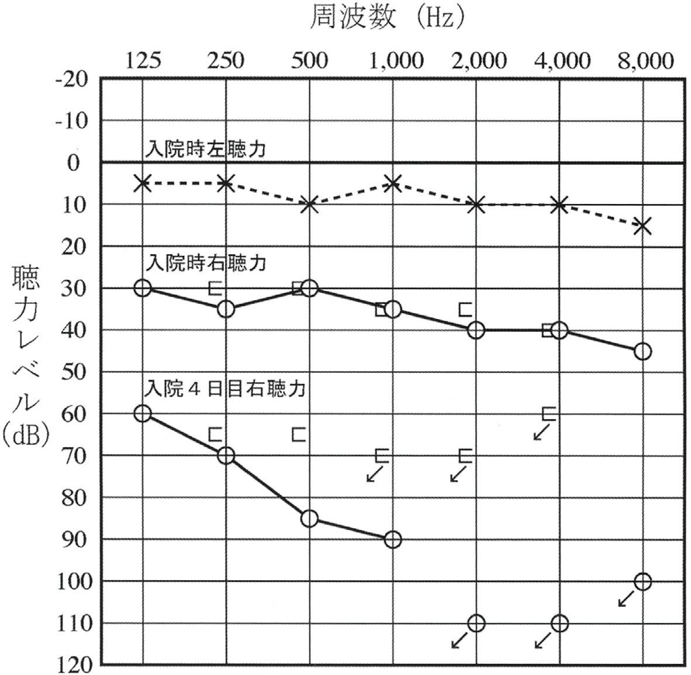
| 選択肢 | 解説 |
|---|---|
| ａ Ménière病 | 発作を反復し、発作間欠期には聴力が回復する（変動性）のが特徴。本例は初回発作が改善せず一方向に悪化し続けている点で合わない。 |
| ｂ 突発性難聴 | 突然の一側性感音難聴という点は似ているが、「パチン」という発症音・外耳道加圧で眼振が出る（瘻孔症状）は突発性難聴では説明できない。また突発性難聴はステロイドで多くが改善方向へ向かう。 |
| ◯ ｃ 外リンパ瘻 | ◯ 気圧変化（飛行機）という誘因、「パチン」という発症音、進行性の感音難聴とめまい、そして外耳道加圧で誘発される眼振（瘻孔症状／Hennebert徴候）——4点すべてが揃っている。安静とステロイドで改善しないので、試験的鼓室開放術で瘻孔を閉鎖する。 |
| ｄ 聴神経腫瘍 | 数か月〜数年かけてゆっくり進行する一側性感音難聴が典型で、数日で高度難聴へ落ちる経過は取らない。また外耳道加圧で眼振は出ない。 |
| ｅ 上半規管裂隙症候群 | 上半規管を覆う骨が欠損し、内耳に「第3の窓」ができる病態。大きな音や耳への圧でめまいが起こる（Tullio現象）・自声強聴・骨導聴力が異常に良くなる（負の骨導閾値）が特徴で、CTで上半規管の骨欠損が写る。本例はCT所見の記載がなく、急性発症・進行性難聴という経過も合わない。 |
| 疾患 | 誘因・発症 | 決め手 | 治療 |
|---|---|---|---|
| 外リンパ瘻 | 気圧変化・力み・外傷／「パチン」 | 瘻孔症状（外耳道加圧で眼振）・進行性 | 安静→改善なければ鼓室開放術 |
| 突発性難聴 | 誘因なし／突然 | 反復しない・進行しない | ステロイド |
| Ménière病 | 反復する | 低音障害型・変動する・耳閉感 | イソソルビド |
| ムンプス難聴 | 耳下腺腫脹 | 小児・一側・高度・不可逆 | 確立した治療なし |
| 選択肢 | 解説 |
|---|---|
| ａ 混合性難聴である。 | 感音難聴である。傷むのは蝸牛の外有毛細胞で、鼓膜・耳小骨は無傷だから気骨導差は生じない。 |
| ｂ 補充現象は陰性である。 | 補充現象は陽性。外有毛細胞（音を増幅する細胞）が失われる内耳性難聴では、小さい音は聞こえないのに大きい音は健常者と同じように響く。「補充現象陽性＝内耳性（迷路性）」「陰性＝後迷路性」という区別は聴神経腫瘍の鑑別でも使う。 |
| ｃ 短時間曝露では発生しない。 | 短時間でも発生する。爆発音・ロックコンサート・耳元での大音量など、1回の強大音で起こるものを「急性音響外傷」と呼ぶ。本章 NO.82（ロックコンサート翌日の難聴）がまさにそれである。 |
| ｄ 曝露を中止すると回復する。 | 回復しない。曝露直後の一時的な閾値上昇（TTS）は休息で戻るが、曝露が繰り返されると永久的閾値上昇（PTS）となり、有毛細胞が脱落した分は二度と戻らない。だから治療ではなく予防（防音保護具・作業環境管理）が中心になる。 |
| ◯ ｅ 高周波数騒音で発生しやすい。 | ◯ 高い周波数の音ほど内耳を傷めやすい。高音は蝸牛の入口（基底回転）で処理され、そこがすべての音響エネルギーの通り道でもあるため負荷が集中する。その結果、4,000Hz付近が最初に落ち込む＝C5 dipという特徴的なオージオグラムになる。 |
| 段階 | 内容 |
|---|---|
| 一時的閾値上昇（TTS） | 曝露直後に閾値が上がるが数時間〜数日で回復する |
| 永久的閾値上昇（PTS） | 曝露の反復で有毛細胞が脱落し回復しない |
| 健診 | 1,000Hz(30dB)と4,000Hz(40dB)の選別聴力検査。4,000Hzで引っかかるのが典型 |
| 対策 | ①発生源対策（低騒音機械）→②伝播経路対策（遮音壁）→③保護具（耳栓・イヤーマフ）の順 |
| 補償 | 騒音性難聴は業務上疾病（労災）として扱われる |
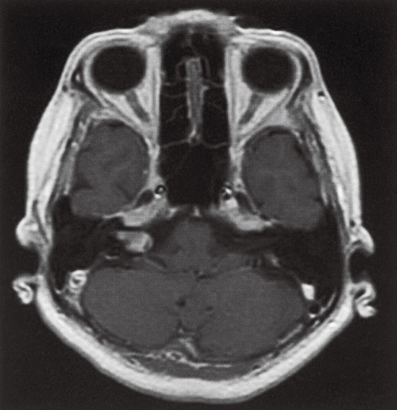
| 選択肢 | 解説 |
|---|---|
| ａ 混合性難聴 | 聴神経腫瘍の難聴は「感音難聴（後迷路性）」。鼓膜・耳小骨は正常で気骨導差は出ないので、混合性にはならない。 |
| ｂ 角膜反射消失 | 三叉神経（求心路）の障害で起こる。腫瘍が内耳道から小脳橋角部へ大きく張り出して三叉神経を圧迫すれば出うるが、それは進行例である。本例は3か月前からの耳鳴のみで、顔面の感覚障害の記載もない。 |
| ◯ ｃ 半規管機能低下 | ◯ 聴神経腫瘍の大半は「前庭神経（とくに上前庭神経）」の鞘から発生する。したがって温度眼振検査（カロリックテスト）で患側の反応低下＝半規管麻痺が早期から出る。ゆっくり進むので中枢が代償し、激しい回転性めまいではなく「ふらつき」として自覚される。 |
| ｄ ティンパノグラムB型 | B型（平坦）は中耳に貯留液がある滲出性中耳炎の所見。本例は鼓膜正常で中耳に病変がないのでA型になる。 |
| ◯ ｅ 聴性脳幹反応〈ABR〉I-V波間の潜時延長 | ◯ 後迷路性難聴の決定的所見。ABRのⅠ波は蝸牛神経の末梢、Ⅴ波は下丘に由来するので、Ⅰ-Ⅴ波間潜時（中枢伝導時間）の延長は「内耳より中枢側で伝導が遅れている」ことを示す。左右差0.2〜0.3ms以上、あるいはⅤ波の消失が聴神経腫瘍のスクリーニングに用いられてきた。 |
| 検査 | 迷路性（内耳性） | 後迷路性（神経性） |
|---|---|---|
| 補充現象 | 陽性 | 陰性 |
| 語音明瞭度 | 純音閾値なりに保たれる | 閾値から予想されるより著しく悪い |
| 自記オージオメトリ | Ⅱ型 | Ⅲ・Ⅳ型（著明な一過性閾値上昇） |
| ABR | 正常波形 | Ⅰ-Ⅴ波間潜時の延長・Ⅴ波の消失 |
| アブミ骨筋反射 | 閾値低下（補充現象を反映） | 減衰（reflex decay）陽性 |
| 選択肢 | 解説 |
|---|---|
| ａ 鼓室形成術 | 鼓膜と耳小骨連鎖を作り直す手術＝伝音難聴の治療。本例は鼓膜正常で、障害は内耳（蝸牛）にあるので適応がない。 |
| ｂ 補聴器の装用 | 補聴器は「残っている聴力を増幅する」道具である。ABRが両側無反応＝増幅すべき残聴がほとんどないので効果が期待できない。ただし人工内耳の適応判定として一定期間試用することはある。 |
| ◯ ｃ 人工内耳埋め込み術 | ◯ 両側高度難聴で補聴器の効果が乏しい例の標準治療。電極を蝸牛内に挿入して、壊れた有毛細胞を飛ばしらせん神経節を直接電気刺激する。細菌性髄膜炎後は蝸牛が骨化（線維化・骨新生）して電極を挿入できなくなるため、可及的早期に手術するのが鉄則である。本例は3歳で発語があり言語習得の途上＝早期介入の効果が大きい。 |
| ｄ 副腎皮質ステロイドの大量投与 | 髄膜炎の急性期に難聴予防として用いる（発症時のデキサメタゾン）ことはあるが、2か月経って固定した高度難聴には効果がない。 |
| ｅ 定期的聴覚検査による経過観察 | 最も避けるべき選択肢。蝸牛骨化は髄膜炎後数か月で進行し、待てば待つほど人工内耳が挿入できなくなる。さらに言語習得期の聴覚遮断は言語発達を損なうため、時間そのものが失われる。 |
| 項目 | 内容 |
|---|---|
| 原理 | 蝸牛内の電極でらせん神経節を直接電気刺激する（有毛細胞を迂回する） |
| 適応 | 両側高度〜重度感音難聴で、補聴器の装用効果が不十分 |
| 前提条件 | 蝸牛神経が保たれていること・蝸牛の開存（骨化していない） |
| 時期 | 先天性難聴は1歳前後から（言語習得の臨界期）。髄膜炎後は骨化前に可及的早期 |
| 禁忌に近い状況 | 蝸牛神経の欠損、中耳の活動性感染 |
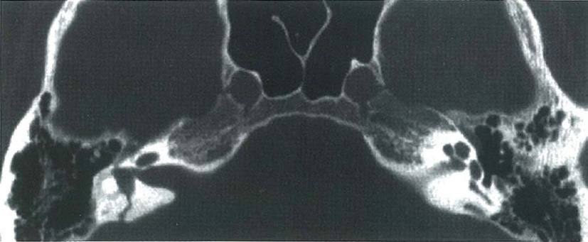
| 選択肢 | 解説 |
|---|---|
| ａ 嗄 声 | 迷走神経（反回神経）の障害で起こる。反回神経は頸部〜胸部を走行しており、側頭骨骨折の直接の被害は受けない。 |
| ◯ ｂ 難 聴 | ◯ 側頭骨の中には内耳（蝸牛）と中耳が丸ごと入っている。骨折線が迷路を横切れば感音難聴、中耳（耳小骨連鎖）を壊せば伝音難聴になる。鼓室内出血（血鼓室）でも伝音難聴が出る。 |
| ◯ ｃ めまい | ◯ 半規管・前庭も側頭骨の中にある。骨折が迷路に及べば激しい回転性めまいと自発眼振が出る。顔面神経麻痺を伴う骨折は「錐体部を横切る型（横骨折）」が多く、迷路が巻き込まれやすい。 |
| ｄ 嗅覚障害 | 前頭蓋底骨折（篩板の骨折）で嗅神経が断裂したときに起こる。側頭骨は嗅覚路と無関係である。 |
| ◯ ｅ 味覚障害 | ◯ 顔面神経から分かれた鼓索神経（舌前2/3の味覚）は鼓室内を横切る。顔面神経麻痺が起きている＝顔面神経管が障害されているので、分岐部より中枢が損傷されていれば味覚障害も伴う。「顔が動かない＋舌の前が味がしない」はセットで覚える。 |
| 縦骨折（約80%） | 横骨折（約20%） | |
|---|---|---|
| 骨折線 | 錐体長軸に平行（中耳を通る） | 錐体長軸に垂直（迷路を通る） |
| 難聴 | 伝音難聴 | 高度感音難聴 |
| めまい | 軽い | 高度（自発眼振あり） |
| 顔面神経麻痺 | 約20%・遅発性/不全 | 約50%・即発性/完全 |
| 鼓膜 | 穿孔・血鼓室・外耳道出血 | 鼓膜は保たれることが多い（血鼓室） |
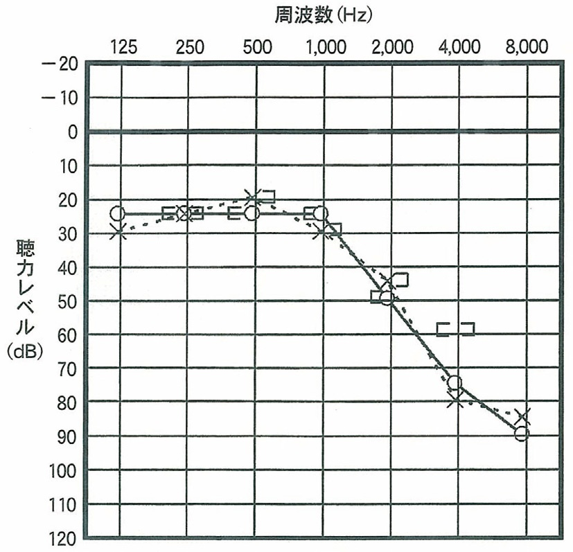
| 選択肢 | 解説 |
|---|---|
| ａ Ménière病 | 一側性で、めまい発作を反復し、難聴が変動するのが典型。本例は両側対称性で、発作性ではなく1年かけて持続している。 |
| ｂ 外リンパ瘻 | 気圧変化・力み・外傷を誘因に「一側性」で急性発症する。両側性・緩徐進行という経過に合わない。 |
| ｃ 前庭神経炎 | 一側性で、上気道感染後に突然発症し、数日〜数週で回復に向かう。また難聴・耳鳴を伴わないので、両側の耳鳴と高音難聴がある本例と合わない。 |
| ｄ 突発性難聴 | 一側性・突然発症が定義。1年かけて進行する両側性の病態は突発性難聴とは呼ばない。 |
| ◯ ｅ 中毒性平衡障害 | ◯ アミノグリコシド系抗菌薬などの耳毒性薬剤による両側前庭・蝸牛障害。両側の前庭機能が同時に落ちるので「回転性めまい」ではなく「ふらつき」と「歩行時の動揺視（oscillopsia）」が主症状になる。温度眼振検査で両側とも反応低下、オージオグラムは両側対称性の高音急墜型感音難聴——すべて一致する。 |
| 薬剤 | 主な標的 | 可逆性 |
|---|---|---|
| アミノグリコシド系（ゲンタマイシン等） | 前庭優位（ストレプトマイシン・ゲンタマイシン）／蝸牛優位（カナマイシン・アミカシン） | 不可逆 |
| シスプラチン | 蝸牛（高音から） | 不可逆 |
| ループ利尿薬（フロセミド） | 血管条 | 多くは可逆 |
| サリチル酸（アスピリン大量） | 蝸牛（耳鳴） | 可逆 |
| キニーネ・エリスロマイシン・バンコマイシン | 蝸牛 | 多くは可逆 |
| 選択肢 | 解説 |
|---|---|
| ａ 語音聴力検査 | これも本人の応答（自覚的検査）に依存するので、申告が本当かどうかを確かめる決め手にはならない。純音閾値と語音明瞭度の食い違いから疑うきっかけにはなる。 |
| ◯ ｂ 聴性脳幹反応〈ABR〉検査 | ◯ 本人の意思が入らない「他覚的聴力検査」。音刺激に対する脳幹の電位を記録するので、被検者が「聞こえない」と答えても、実際に聞こえていれば波形が出る。純音聴力検査では両側80dBなのに、ABRの反応閾値が正常であれば、機能性難聴（心因性難聴・詐聴）と診断できる。 |
| ｃ アデノイドエックス線撮影 | アデノイド増殖症を見る検査で、関係するのは耳管閉塞による滲出性中耳炎＝伝音難聴。本例は感音難聴でティンパノグラムもA型（中耳は正常）なので当たらない。 |
| ｄ 側頭骨単純CT | 骨の形態（外耳道閉鎖・耳小骨奇形・真珠腫・骨折）を見る検査。本例は形態異常を疑う所見がない。 |
| ｅ 頭部単純MRI | 聴神経腫瘍など後迷路病変の除外には有用だが、両側性・16歳・日常生活に支障なしという文脈では優先度が低い。まず「本当に聞こえていないのか」を他覚的に確かめるほうが先である。 |
| 種類 | 検査 | 特徴 |
|---|---|---|
| 自覚的（応答が要る） | 純音聴力検査・語音聴力検査 | 本人の申告に依存＝機能性難聴では信用できない |
| 自記オージオメトリ | V型は機能性難聴を示唆（Jerger分類） | |
| 他覚的（応答が要らない） | ABR（聴性脳幹反応） | 脳幹の電位。閾値推定と後迷路病変の評価 |
| OAE（耳音響放射） | 外有毛細胞の機能。新生児スクリーニングにも使う | |
| ティンパノメトリ／アブミ骨筋反射 | 中耳の状態。高度難聴のはずなのに反射が出れば矛盾 |
| 選択肢 | 解説 |
|---|---|
| ａ アデノウイルス | 咽頭結膜熱・流行性角結膜炎の原因。皮膚に水疱を作る性質も、脳神経節に潜伏する性質もない。 |
| ｂ 単純ヘルペスウイルス | Bell麻痺の原因として想定されるウイルスだが、Bell麻痺では耳介に水疱は出ない。単純ヘルペスの水疱は口唇・性器に出る。 |
| ｃ Epstein-Barrウイルス | 伝染性単核球症・上咽頭癌・Burkittリンパ腫と関係する。顔面神経麻痺の原因ウイルスとしては挙がらない。 |
| ◯ ｄ 水痘・帯状疱疹ウイルス | ◯ Ramsay Hunt症候群の原因。初感染で水痘（みずぼうそう）を起こした後、脳神経節・脊髄後根神経節に潜伏する。加齢・疲労・免疫低下で膝神経節から再活性化すると、耳介の水疱＋末梢性顔面神経麻痺＋第Ⅷ脳神経症状を起こす。 |
| ｅ ヒトパピローマウイルス | 尋常性疣贅・尖圭コンジローマ・子宮頸癌・喉頭乳頭腫（本科目では第8章）の原因。水疱ではなく「疣（いぼ）」を作るウイルスである。 |
| 疾患 | 決め手 |
|---|---|
| Bell麻痺 | 皮疹なし・耳症状なし。原因不明（HSV-1説） |
| Ramsay Hunt症候群 | 耳介・外耳道の水疱＋難聴・めまい |
| 中耳炎（急性・真珠腫性） | 耳漏・鼓膜所見の異常。顔面神経管への炎症波及 |
| 側頭骨骨折 | 外傷歴・CTで骨折線 |
| 耳下腺悪性腫瘍 | 耳下腺の腫瘤＋顔面神経麻痺＝悪性の強い指標 |
| 脳血管障害 | 前額のしわ寄せが残る（中枢性）＋片麻痺 |
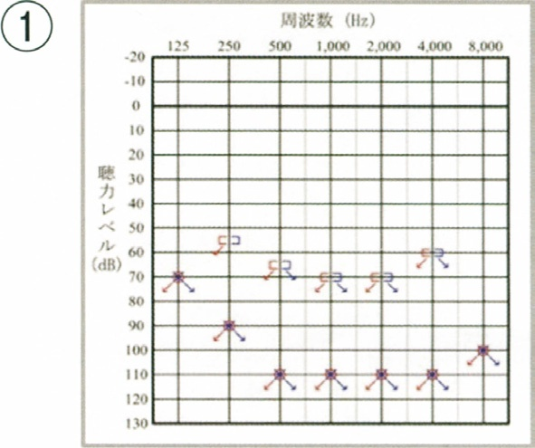
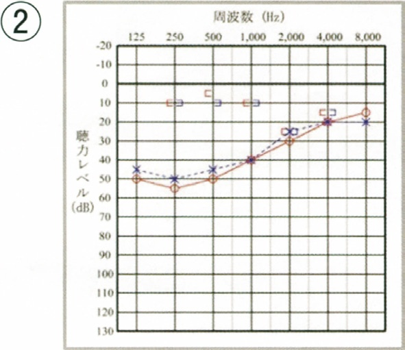
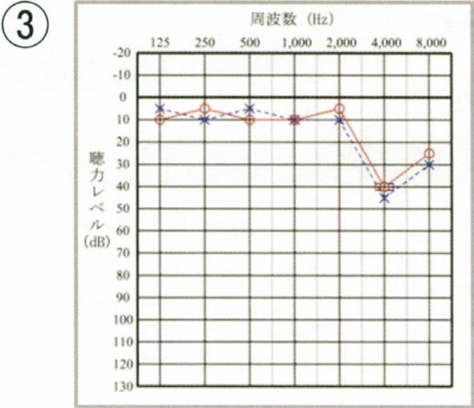
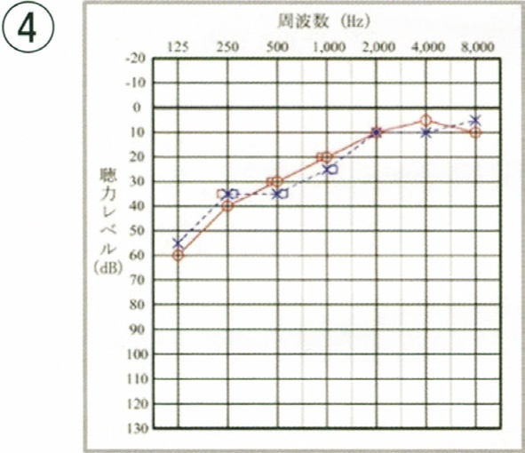
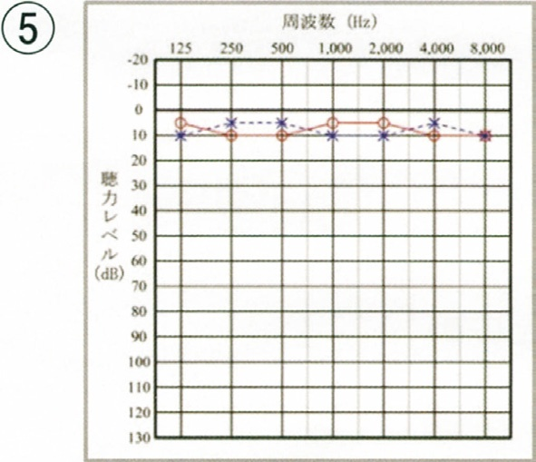
| 選択肢 | 解説 |
|---|---|
| ａ ① | 両側とも気導70〜110dBの高度難聴で、骨導は55〜65dBに留まる＝混合性難聴。慢性中耳炎の進行例などの型で、鼓膜正常・側頭骨CT正常という記載と矛盾する。 |
| ｂ ② | 気導が低音〜中音で50〜60dBと落ち、骨導は10〜20dBに保たれる＝伝音難聴。中耳の病変を示す型であり、本例には当てはまらない。 |
| ◯ ｃ ③ | ◯ 両側とも4,000Hzだけが50dB前後へ落ち込み、8,000Hzでは25dB程度まで戻る＝C5 dip。低音〜2,000Hzは10dB前後で正常なので会話には支障がなく、本人は高音の耳鳴だけを訴える。骨導も気導に一致＝感音難聴で、イヤーフォンによる長期の騒音曝露という病歴に完全に一致する。 |
| ｄ ④ | 両側とも低音が60dBと悪く、高音に向かって改善する上昇型（低音障害型）。Ménière病や急性低音障害型感音難聴の型で、騒音性難聴の逆パターンである。 |
| ｅ ⑤ | 両側とも全周波数で0〜10dBの正常聴力。「軽い難聴を自覚している」という病歴を説明できない。 |
| 音圧レベル | 身近な音 | 1日の許容時間の目安 |
|---|---|---|
| 85dB | 騒がしい街頭・掃除機 | 8時間 |
| 90dB | 大声の会話・地下鉄車内 | 約2時間半 |
| 100dB | 大音量のイヤーフォン・電車の警笛 | 約15分 |
| 110dB | ロックコンサートの前列 | 約1〜2分 |
| 120dB以上 | ジェットエンジン・爆発音 | 瞬時に急性音響外傷 |
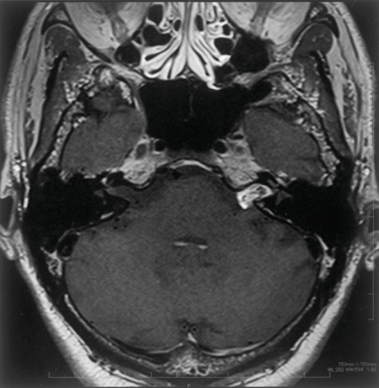
| 選択肢 | 解説 |
|---|---|
| ａ 視野検査 | 下垂体腫瘍（両耳側半盲）・頭蓋咽頭腫・後頭葉病変などで異常になる。小脳橋角部・内耳道の腫瘍は視覚路と関係がない。 |
| ｂ 脳波検査 | てんかん・意識障害・脳症の評価に用いる。本例に発作の記載はなく、後頭蓋窩の小さな腫瘍で脳波が変化することはない。 |
| ◯ ｃ 聴力検査 | ◯ 内耳道の中で腫瘍が蝸牛神経を圧迫する。一側性の感音難聴（後迷路性）が出るので、純音聴力検査で患側の閾値上昇、語音明瞭度の不釣り合いな低下を認める。本人が自覚していなくても検査では捕まる——聴神経腫瘍は「無症状で偶然見つかる」ことが増えている。 |
| ｄ 脳脊髄液検査 | 髄膜炎・くも膜下出血・ギラン・バレー症候群などの評価。後頭蓋窩に腫瘤がある状態での腰椎穿刺は脳ヘルニアの危険があり、積極的に行う検査ではない。 |
| ◯ ｅ 平衡機能検査 | ◯ 腫瘍の発生母地は前庭神経なので、温度眼振検査（カロリックテスト）で患側の反応低下＝半規管麻痺が出る。ゆっくり進むので中枢が代償し、自覚的なめまいは軽い——だからこそ「検査で初めて分かる」ことになる。 |
| 腫瘍 | 頻度 | 画像の決め手 |
|---|---|---|
| 前庭神経鞘腫（聴神経腫瘍） | 最多（約8割） | 内耳道内から発生し内耳道を拡大。アイスクリームコーン状 |
| 髄膜腫 | 2番目 | 硬膜に広基性に付着（dural tail）。内耳道の拡大はない |
| 類表皮腫（epidermoid） | 3番目 | 造影されず、拡散強調像で高信号 |
| 顔面神経鞘腫 | 稀 | 顔面神経麻痺が早期から出る |
| 選択肢 | 解説 |
|---|---|
| ａ 蝸 牛 | 蝸牛は音を感じる器官。ここが障害されれば難聴・耳鳴が出るはずだが、本例は「難聴や耳鳴の自覚はなかった」と明記されている。 |
| ◯ ｂ 半規管 | ◯ 卵形囊から剝がれた耳石が半規管（多くは後半規管）に迷入している。起床時・上を向く動作という「頭位変換」で誘発され、1〜2分以内に治まり、難聴を伴わない——BPPVの典型像である。耳石の出所は卵形囊だが、症状を起こしている「病変部位」は半規管。 |
| ｃ 内耳道 | 内耳道の病変＝聴神経腫瘍が代表。進行性の一側性難聴・耳鳴が主症状で、めまいは「ふらつき」程度。数十秒〜数分で反復する回転性めまいという形は取らない。 |
| ｄ 内リンパ囊 | 内リンパ囊は内リンパを吸収する器官で、その機能不全がMénière病（内リンパ水腫）を起こす。Ménière病は10分〜数時間持続し、難聴・耳鳴・耳閉感を伴うので合わない。 |
| ｅ 前庭皮質野 | 中枢（大脳皮質）の病変。中枢性めまいなら他の神経症状（構音障害・複視・運動失調など）を伴うのが普通で、本例は「神経診察に異常を認めない」。 |
| 部位 | 疾患 | 症状の特徴 |
|---|---|---|
| 半規管 | BPPV | 頭位変換性・数十秒〜数分・難聴なし |
| 内リンパ囊（内リンパ水腫） | Ménière病 | 10分〜数時間・反復・難聴と耳閉感を伴う |
| 前庭神経 | 前庭神経炎 | 数日持続・一回きり・難聴なし |
| 蝸牛 | 突発性難聴・ムンプス難聴 | 難聴が主・めまいは随伴 |
| 内耳道 | 聴神経腫瘍 | 進行性の一側難聴・ふらつき |
| 脳幹・小脳 | 梗塞・出血 | 他の神経症状を伴う・垂直眼振 |
| 選択肢 | 解説 |
|---|---|
| ａ 小脳梗塞 | 中枢性めまいの代表。体幹失調で立てない・四肢の運動失調・構音障害・頭痛などを伴い、眼振は注視方向性や垂直性となる。本例は「他に神経症状を認めない」ので否定される。 |
| ｂ Ménière病 | 10分〜数時間持続し、難聴・耳鳴・耳閉感を伴う。本例は数十秒で止まり、難聴も耳鳴もなく、純音聴力検査も正常。 |
| ｃ 前庭神経炎 | 激しい回転性めまいが数日〜数週間持続し続ける。「数十秒で止まって、動くとまた出る」という反復パターンは取らない。 |
| ｄ 聴神経腫瘍 | 進行性の一側性感音難聴が主症状で、純音聴力検査が正常なら考えにくい。めまいも回転性というより持続するふらつきである。 |
| ◯ ｅ 良性発作性頭位眩暈症 | ◯ 起床時・上を向く・寝返りといった頭位変換で誘発され、数十秒で止まり、難聴も耳鳴もない。眼振検査で頭位変換眼振を認めることが決定的で、純音聴力検査正常・他の神経症状なしという「引き算」もすべてBPPVを指している。 |
| 質問 | 読み取ること |
|---|---|
| どのくらい続きますか | 秒＝BPPV／分〜時間＝Ménière／日＝前庭神経炎 |
| 聞こえや耳鳴りは | あり＝蝸牛を巻き込む病態（Ménière・突発性難聴・聴神経腫瘍） |
| どんなときに出ますか | 頭位変換で誘発＝BPPV／立ち上がりで＝起立性低血圧 |
| 他に症状は（しゃべりにくい・ものが二重・力が入らない） | ひとつでもあれば中枢性を疑い画像へ |
| 頭痛はありますか | 小脳出血・椎骨動脈解離・前庭性片頭痛 |
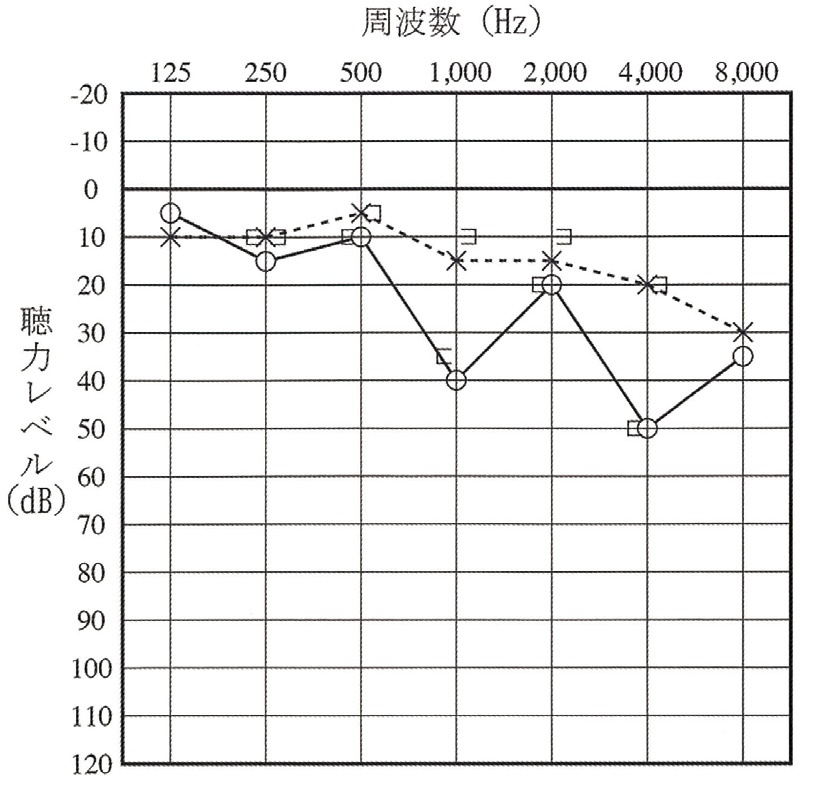
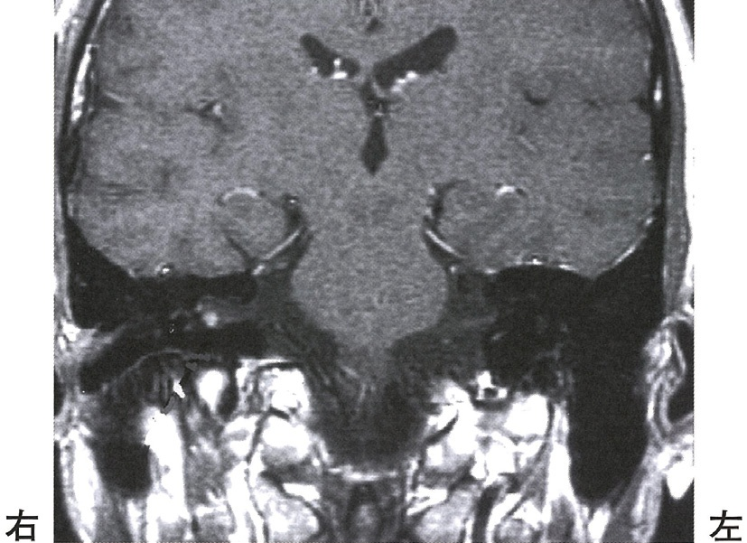
| 選択肢 | 解説 |
|---|---|
| ａ 外科手術 | 脳幹圧迫をきたす大きな腫瘍や、増大が速い例で選ばれる。本例は78歳・内耳道内に限局した小腫瘍で、手術侵襲に見合う利益が乏しい。（本問は採点除外） |
| ｂ 経過観察 | 高齢者の小さな聴神経腫瘍では第一に考えられる方針（wait and scan）。ただし本例は2か月で難聴が出現し、めまいが増悪している＝進行しているため、「経過観察でよい」と言い切れるかが割れる。（本問は採点除外） |
| ｃ 頭位治療 | BPPVに対する耳石置換法。MRIで腫瘍が写っている本例には適応がない。 |
| ｄ 放射線治療 | 定位放射線治療（ガンマナイフ）は、増大する中等大までの聴神経腫瘍・高齢者・手術ハイリスク例のよい適応である。進行している点を重く見ればこれを選ぶ余地がある。（本問は採点除外） |
| ｅ 副腎皮質ステロイド投与 | 突発性難聴やRamsay Hunt症候群の治療であり、腫瘍を小さくする効果はない。 |
| 方針 | 典型的な適応 |
|---|---|
| 経過観察（wait and scan） | 小さく（内耳道内〜1.5cm程度）、無症状〜軽症、高齢 |
| 定位放射線治療（ガンマナイフ） | 増大が確認された中等大（〜3cm程度）、高齢・手術ハイリスク |
| 手術（摘出） | 大きく脳幹・小脳を圧迫、水頭症、若年で長期予後を重視 |
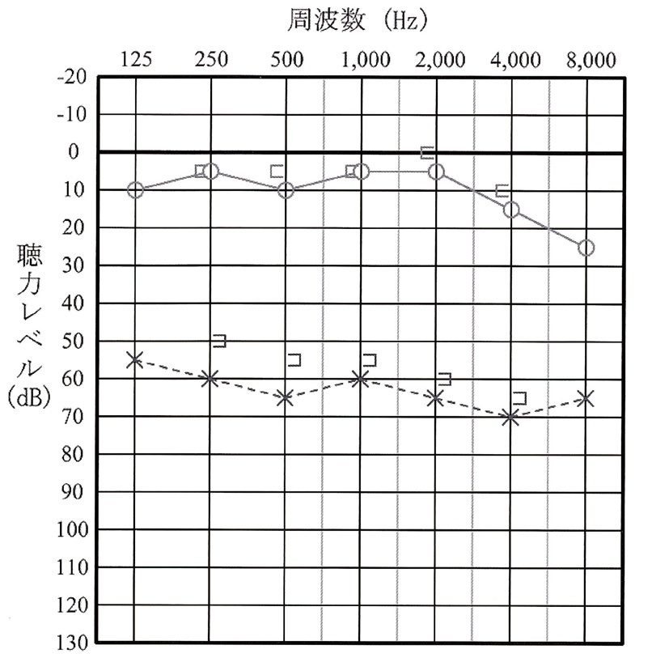
| 選択肢 | 解説 |
|---|---|
| ◯ ａ Ménière病 | ◯ 回転性めまい＋一側の難聴・耳鳴という組み合わせはMénière病の典型。初回発作の時点ではMénière病と突発性難聴を区別できない——Ménière病は「発作を反復して初めて」診断が確定するためで、だからこの2つが並んで正解になる。 |
| ｂ 前庭神経炎 | 前庭神経だけの障害なので難聴・耳鳴を伴わない。本例は左難聴と耳鳴があるので合わない。 |
| ◯ ｃ 突発性難聴 | ◯ 突然発症した一側性感音難聴で、約3割にめまいを伴う。「これまで同様の症状をきたしたことはなかった」＝初回という点は突発性難聴の定義に合致する。めまいを伴う突発性難聴は内耳の障害範囲が広く予後不良である。 |
| ｄ 真珠腫性中耳炎 | 鼓膜の弛緩部に痂皮・陥凹があり、耳漏を反復するのが典型。本例は「耳漏の既往なし」「両側鼓膜に異常なし」と明記され、真珠腫は完全に否定されている。 |
| ｅ 良性発作性頭位めまい症 | 難聴も耳鳴も伴わないのがBPPVの原則。また頭位変換で誘発され数十秒で治まるという時間経過の記載もない。 |
| 突発性難聴 | Ménière病 | |
|---|---|---|
| 発作 | 一回きり（再発しない） | 反復する |
| 難聴 | 固定する（回復するか残るか） | 変動する（発作間欠期に戻る） |
| オージオグラム | 型は一定しない（水平・高音漸傾など） | 初期は低音障害型 |
| めまい | 約3割に随伴（予後不良因子） | 必発（10分〜数時間） |
| 治療 | ステロイド（早期） | イソソルビド＋生活指導 |
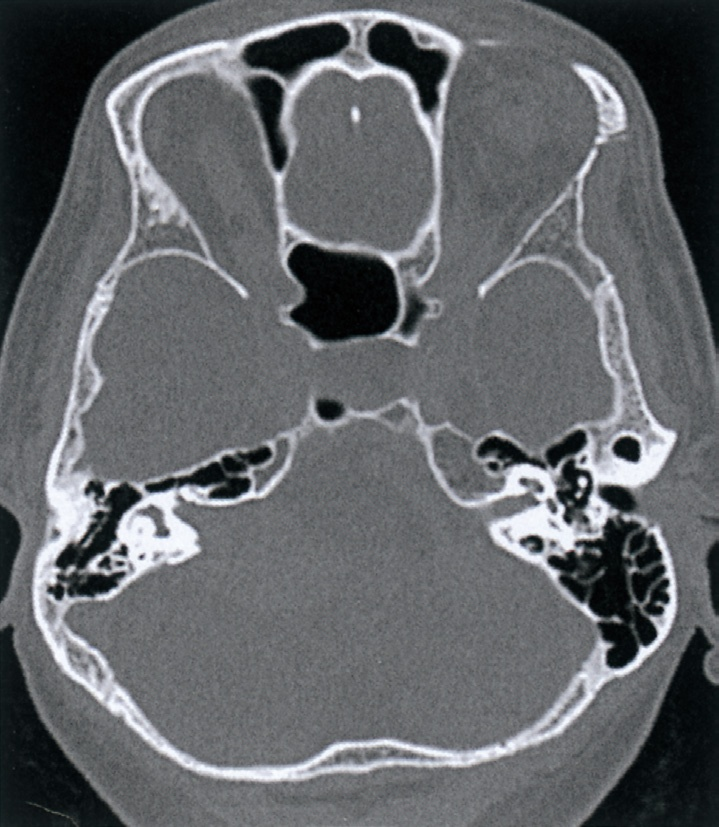
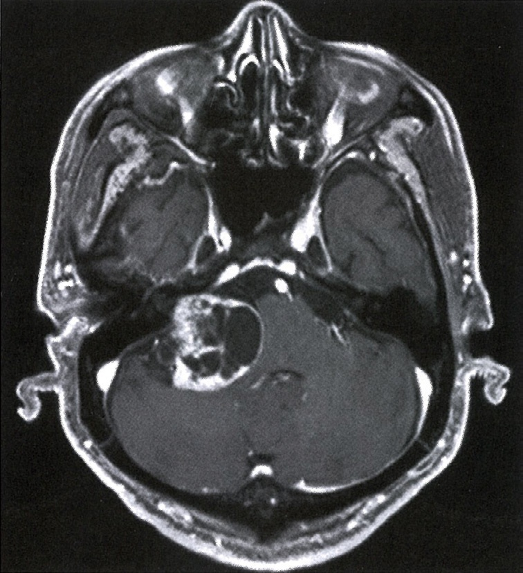
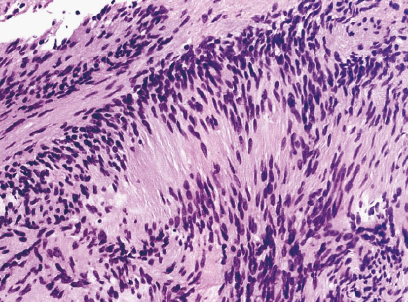
| 選択肢 | 解説 |
|---|---|
| ａ 膠芽腫 | 大脳半球（白質）に発生する最悪性の神経膠腫。画像ではリング状に造影される不整な腫瘤と強い浮腫を示し、数週〜数か月で急速に進行する。4年の経過も、内耳道の拡大も説明できない。 |
| ｂ 髄膜腫 | 小脳橋角部腫瘍の第2位で、鑑別として最も紛らわしい。しかし髄膜腫は硬膜に広基性に付着し（dural tail sign）、内耳道の中から発生しないので内耳道は拡大しない。組織像も渦巻き構造（whorl formation）と砂粒小体であり、紡錘形細胞の柵状配列ではない。 |
| ｃ 脳膿瘍 | 発熱・炎症反応の上昇を伴い、リング状増強効果と拡散強調像での著明な高信号を示す。本例は体温36.2℃で炎症所見がなく、4年の経過も合わない。 |
| ◯ ｄ 神経鞘腫 | ◯ 前庭神経鞘腫（聴神経腫瘍）。A：骨条件CTで右内耳道が拡大（腫瘍が内耳道の中から発生して骨を押し広げた証拠）。B：造影MRIで右小脳橋角部から内耳道へ伸びるアイスクリームコーン状の造影腫瘤。C：H-E染色で紡錘形細胞が束をなし、核が柵状に配列（Antoni A型・Verocay body）——3枚すべてが一致する。4年かけて進行する右感音難聴＋右小脳性運動失調という経過も典型的である。 |
| ｅ 転移性脳腫瘍 | 原発巣があり、多発することが多く、灰白質白質境界に生じて強い浮腫を伴う。内耳道を拡大する形は取らず、経過も急である。 |
| 所見 | 本例 | 意味 |
|---|---|---|
| Rinne試験 | 左右ともに陽性（気導＞骨導） | 伝音難聴を否定＝感音難聴 |
| Weber試験 | 左（健側）に偏位 | 感音難聴では健側へ偏る（伝音難聴なら患側へ偏る） |
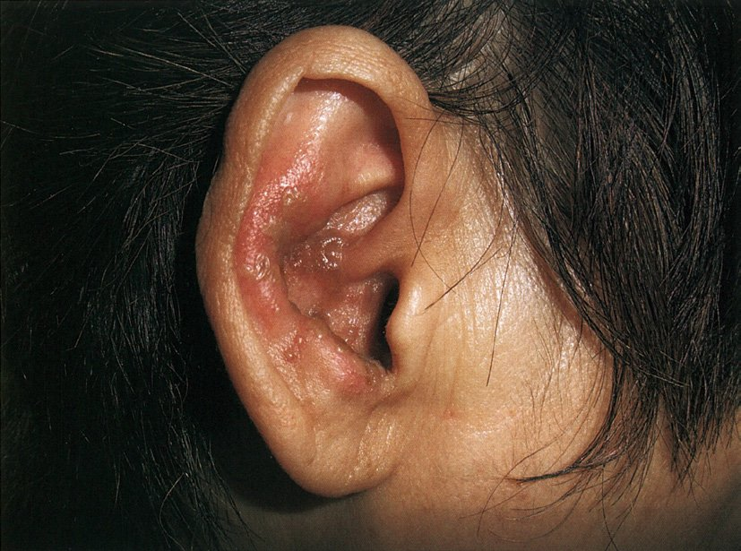
| 選択肢 | 解説 |
|---|---|
| ａ 「細菌が入りました」 | 白血球6,000・CRP 0.3mg/dLと炎症反応がない。細菌感染なら発熱・白血球増多・CRP上昇を伴うはずである。 |
| ｂ 「中耳炎が原因です」 | 両側の鼓膜に異常を認めないと明記されている。中耳炎から顔面神経麻痺が起こることはある（急性中耳炎・真珠腫性中耳炎）が、その場合は必ず鼓膜所見に異常が出る。 |
| ◯ ｃ 「ウイルスが原因です」 | ◯ 耳介の紅斑と水疱＋末梢性顔面神経麻痺＋感音難聴＋めまい＝Ramsay Hunt症候群。原因は水痘・帯状疱疹ウイルスの再活性化である。抗ウイルス薬と副腎皮質ステロイドをできるだけ早く開始すると説明につなげる。 |
| ｄ 「脳の血管が閉塞しています」 | 脳血管障害なら中枢性顔面神経麻痺（前額のしわ寄せが残る）となり、耳介に水疱は出ない。「その他に神経症状を認めない」ことも脳卒中らしくない。 |
| ｅ 「悪性腫瘍の可能性があります」 | 耳下腺癌などが顔面神経麻痺を起こすことはあるが、数日で急に完成する経過ではなく、耳介の水疱も伴わない。耳下腺に腫瘤の記載もない。 |
| 時期 | 起きていること | 診療上の注意 |
|---|---|---|
| 前駆期（数日） | 膝神経節でウイルスが再活性化し神経炎が始まる | この時点では「原因不明の耳痛」に見える |
| 発症期 | 水疱出現・顔面神経麻痺・第Ⅷ脳神経症状 | ここで治療開始（72時間以内が目標） |
| 回復期 | 数週〜数か月かけて回復 | 完全回復は約6割。病的共同運動などの後遺症に注意 |
| 選択肢 | 解説 |
|---|---|
| ａ 耳 痛 | 外耳炎・急性中耳炎・耳性帯状疱疹など「炎症」の症状。BPPVは炎症でも感染でもないので耳痛は出ない。 |
| ｂ 複 視 | 外眼筋・脳幹の障害を示す。めまいに複視が加わったら中枢性（脳幹梗塞など）を真っ先に疑うべきで、本例は「脳神経に異常を認めず」と否定されている。 |
| ◯ ｃ 悪 心 | ◯ 前庭系の急な刺激は自律神経症状を引き起こす。前庭神経核は迷走神経背側核・最後野（嘔吐中枢）と密に連絡しているため、回転性めまいには悪心・嘔吐・冷汗・顔面蒼白が高率に伴う。BPPVでも発作時には強い悪心が出ることが多い。 |
| ｄ 視野狭窄 | 緑内障・網膜色素変性・視路の病変で生じる。前庭とは経路が異なり、BPPVでは起こらない。 |
| ｅ 閃輝暗点 | 片頭痛の前兆（視覚性前兆）。前庭性片頭痛ではめまいと頭痛が併存するが、本例は「頭痛はない」と明記されている。 |
| 症状 | 意味 |
|---|---|
| 悪心・嘔吐・冷汗・顔面蒼白 | 前庭自律神経反射。末梢性でも中枢性でも出る（危険信号ではない） |
| 難聴・耳鳴・耳閉感 | 蝸牛を巻き込む病態（Ménière病・突発性難聴・聴神経腫瘍） |
| 複視・構音障害・嚥下障害・顔面や四肢のしびれ | 脳幹病変＝直ちに画像へ |
| 激しい頭痛・後頸部痛 | 小脳出血・椎骨動脈解離 |
| 立てない・座れないほどの失調 | 小脳梗塞（末梢性なら支えれば歩ける） |
| 選択肢 | 解説 |
|---|---|
| ａ 患者を閉眼させて行う。 | 閉眼すると眼振を「見る」ことができない。眼振は開眼のまま、固視だけを外して観察するのが原則である。（閉眼下で電気的に記録する電気眼振図〈ENG〉という方法は別にある。） |
| ｂ 頸部を前屈させて行う。 | 頭位眼振検査は仰臥位・懸垂頭位・左右側臥位など「決められた頭位を取らせて」眼振を見る検査で、前屈位という固定した肢位で行うものではない。 |
| ◯ ｃ Frenzel眼鏡を用いて行う。 | ◯ 末梢性の眼振は「固視（じっと見つめること）」で抑制される。Frenzel眼鏡は強い凸レンズ（＋15〜20D）で被検者の視界をぼかして固視を外し、同時に検者からは眼球が拡大されて見えるように作られている。これを使わないと、末梢性の眼振を見落とす。暗所での赤外線CCDカメラも同じ目的で使う。 |
| ｄ 検者の指先を注視させて行う。 | 注視させる＝固視させることになり、末梢性の眼振が抑制されて消えてしまう。選択肢cと正反対である。（注視眼振検査は「注視方向で眼振が変わるか」を見る別の検査で、中枢性の評価に用いる。） |
| ｅ 片方の外耳道に冷水を注入する。 | これは温度眼振検査（カロリックテスト）で、左右の半規管機能を個別に評価する検査である。頭位眼振検査とは別物。 |
| 検査 | 何を見るか | ポイント |
|---|---|---|
| 頭位眼振検査／頭位変換眼振検査 | 頭位で誘発される眼振（BPPVの診断） | Frenzel眼鏡で固視を外す |
| 温度眼振検査（カロリック） | 左右の外側半規管機能を個別に評価 | 冷水/温水または冷気を注入。半規管麻痺の検出 |
| 頭部インパルス試験（HIT） | 前庭動眼反射の障害 | 陽性（catch-up saccade）＝末梢性 |
| 重心動揺検査 | 立位のバランス | 開眼/閉眼で比較（Romberg率） |
| VEMP（前庭誘発筋電位） | 球形囊・卵形囊の機能 | 上半規管裂隙症候群などで異常 |
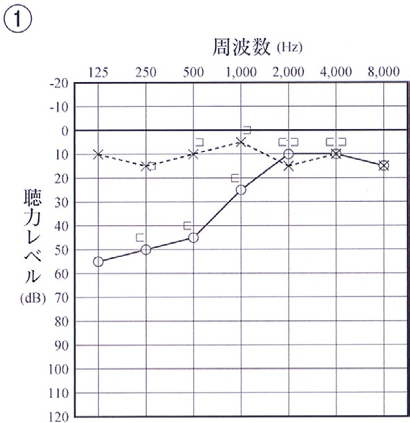
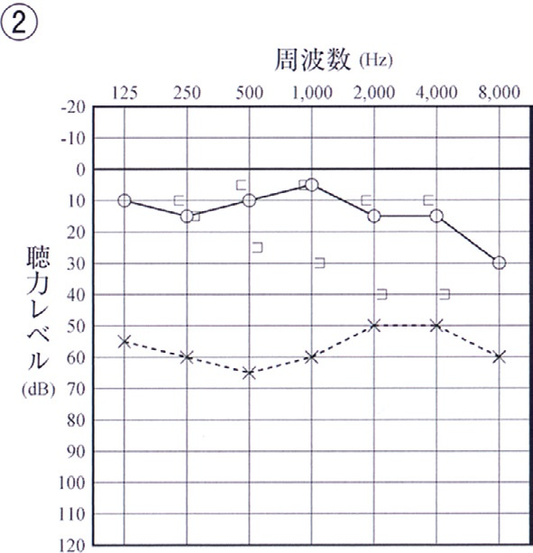
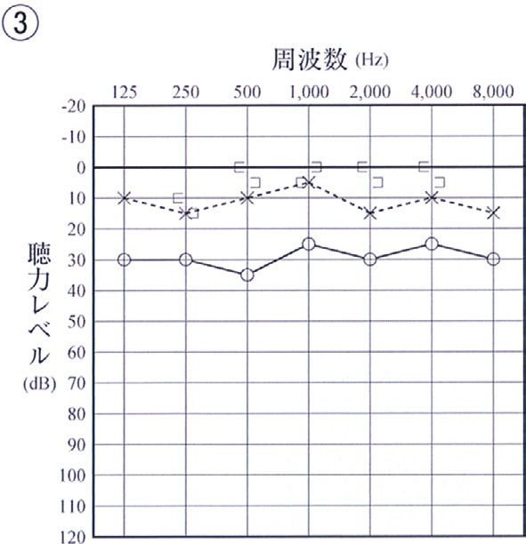
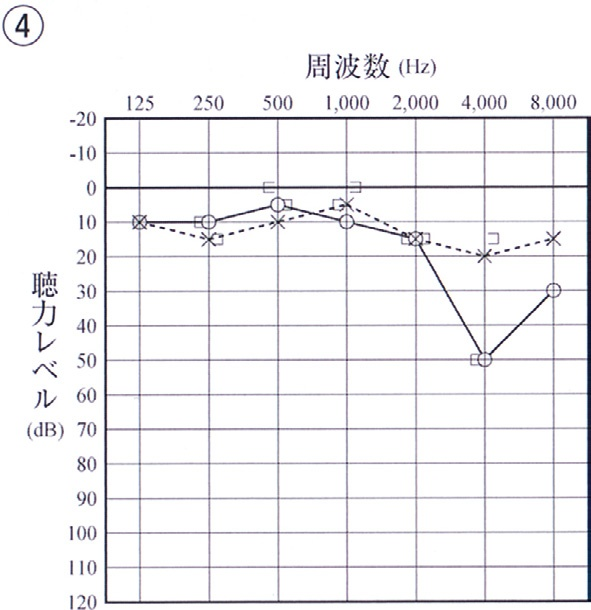
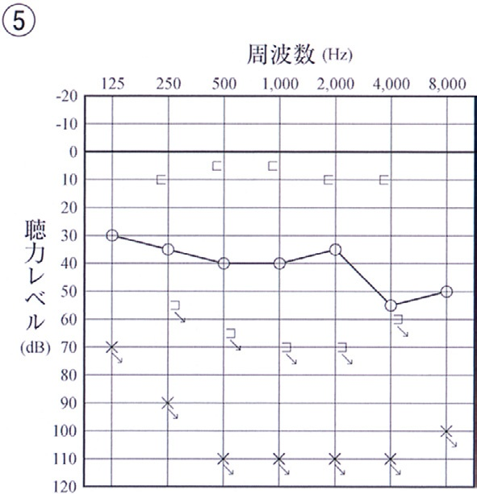
| 選択肢 | 解説 |
|---|---|
| ａ ① | 右の低音（125Hz）が55dBと悪く、高音に向かって改善する低音障害型。Ménière病・急性低音障害型感音難聴の型で、音響外傷とは正反対のパターンである。 |
| ｂ ② | 左の全周波数が50〜65dBと落ちる中等度感音難聴。本例の症状は右耳であり、左右が合わない。 |
| ｃ ③ | 右の全周波数が25〜35dBと一様に落ちる水平型。4,000Hzだけが落ちるという音響外傷の特徴がない。 |
| ◯ ｄ ④ | ◯ 右耳のみ、125〜2,000Hzは10〜15dBと正常なのに4,000Hzで50dBへ急激に落ち込み、8,000Hzでは30dBまで戻る＝典型的なC5 dip。左は正常。1回の強大音による急性音響外傷の像そのものである。 |
| ｅ ⑤ | 左が高度（100〜110dB・スケールアウト）、右も30〜55dBと両側が広範に障害されている。一晩のコンサートの翌日という経過には重すぎる。 |
| 急性音響外傷 | 慢性騒音性難聴 | |
|---|---|---|
| 曝露 | 1回の強大音（爆発・コンサート・銃声） | 年余にわたる反復曝露（工場・工事） |
| 側性 | 音源に近い側＝一側性のことがある | 両側対称性 |
| オージオグラム | どちらも4,000Hzのdip（C5 dip）から始まる | |
| 治療 | 早期の副腎皮質ステロイドで回復の余地あり | 確立した治療なし＝予防がすべて |
| 耳鳴 | 難聴より先に自覚されることが多い | |
| 選択肢 | 解説 |
|---|---|
| ａ 複 視 | 外眼筋（動眼・滑車・外転神経）の障害で起こる。Ramsay Hunt症候群が侵すのは顔面神経（Ⅶ）と内耳神経（Ⅷ）であり、眼球運動の神経ではない。 |
| ◯ ｂ 難 聴 | ◯ 内耳道内で蝸牛神経が炎症に巻き込まれるため、感音難聴が生じる。「第Ⅷ脳神経症状を伴う」ことがBell麻痺との決定的な差である。 |
| ◯ ｃ めまい | ◯ 同じく前庭神経が侵されて回転性めまい・平衡障害が起こる。難聴とめまいはしばしばセットで現れる。 |
| ◯ ｄ 耳介疱疹 | ◯ 三徴の中核。耳介・外耳道（Ramsay Hunt領域）に紅斑と小水疱が集簇する。口蓋や舌にも出ることがあるので口腔内も必ず見る。 |
| ｅ 眼瞼下垂 | 動眼神経麻痺・Horner症候群・重症筋無力症などで起こる。顔面神経麻痺で起こるのは「閉じられない（兎眼）」であって「下がる（下垂）」ではない——上眼瞼を挙げるのは動眼神経支配の上眼瞼挙筋とMüller筋である。よく問われる引っかけ。 |
| 症状 | 顔面神経麻痺で | 本当の責任神経 |
|---|---|---|
| 閉眼不能（兎眼） | 出る | 顔面神経（眼輪筋） |
| 眼瞼下垂 | 出ない | 動眼神経（上眼瞼挙筋）・交感神経（Müller筋） |
| 複視 | 出ない | 動眼・滑車・外転神経 |
| 味覚障害（舌前2/3） | 出る | 顔面神経（鼓索神経） |
| 聴覚過敏 | 出る | 顔面神経（アブミ骨筋神経） |
| 涙液分泌低下 | 出る | 顔面神経（大錐体神経） |
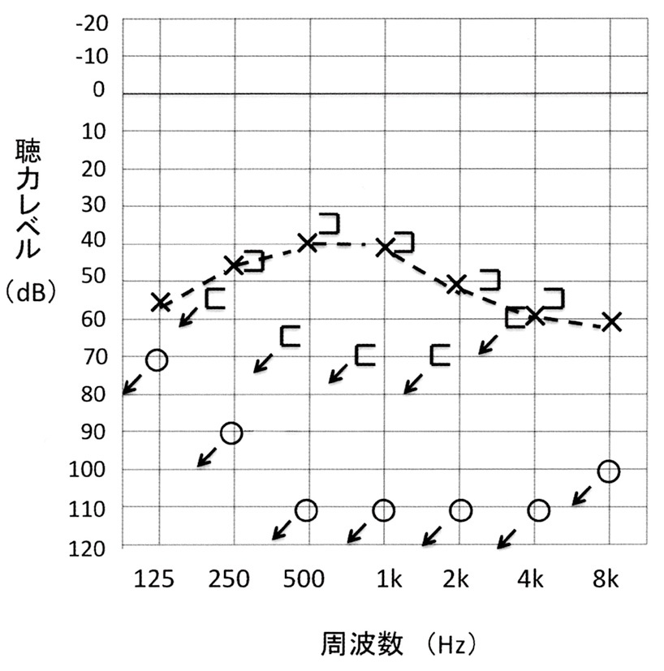
| 選択肢 | 解説 |
|---|---|
| ａ 音叉検査 | Rinne試験・Weber試験で伝音難聴か感音難聴かを判定する簡易検査。すでに純音聴力検査で気骨導が評価されており、新たな情報を足さない。しかも被検者の応答に依存する自覚的検査なので、本例の疑い（機能性難聴）を確かめる役に立たない。 |
| ｂ 遊戯聴力検査 | 2〜5歳ころの幼児に、遊びの形で応答させて聴力を測る方法。16歳には適応がなく、これも自覚的検査である。 |
| ｃ 頭位変換眼振検査 | BPPVの診断に用いる前庭機能検査。本例はめまいの訴えがなく、聴力の評価にはならない。 |
| ◯ ｄ 自記オージオメトリ | ◯ 連続音と断続音の閾値を被検者自身にボタンで追跡させる検査。Jerger分類でⅤ型（断続音の閾値が連続音より悪い＝逆転する）を示せば機能性難聴（心因性難聴・詐聴）を強く示唆する。正常やⅠ型は正常〜伝音性、Ⅱ型は内耳性、Ⅲ・Ⅳ型は後迷路性を示す。 |
| ◯ ｅ 聴性脳幹反応〈ABR〉 | ◯ 被検者の応答が要らない他覚的検査。純音聴力検査では高度難聴なのに、ABRの反応閾値が正常なら「実際には聞こえている」ことが客観的に示せる。同時に後迷路病変の除外もできる。 |
| 型 | 連続音と断続音の関係 | 示すもの |
|---|---|---|
| Ⅰ型 | ほぼ重なる | 正常・伝音難聴 |
| Ⅱ型 | 高音部で連続音がやや下がり、振幅が小さくなる | 内耳性（迷路性）＝補充現象を反映 |
| Ⅲ・Ⅳ型 | 連続音が著しく下がる（一過性閾値上昇） | 後迷路性（聴神経腫瘍など） |
| Ⅴ型 | 断続音の閾値が連続音より悪い（逆転） | 機能性難聴（心因性難聴・詐聴） |
| 選択肢 | 解説 |
|---|---|
| ａ 耳下腺癌 | 耳下腺の腫瘤＋顔面神経麻痺という組み合わせは悪性を強く疑う所見だが、耳介の皮疹もめまいも難聴も伴わない。 |
| ｂ Bell麻痺 | 末梢性顔面神経麻痺だけが単独で起こる。皮疹がなく、めまい・難聴も伴わないのが定義的な特徴で、そこがRamsay Hunt症候群との分かれ目である。 |
| ｃ 小脳橋角部腫瘍 | 聴神経腫瘍が代表で、難聴・耳鳴・ふらつきは出るが、耳介の皮疹は出ず、顔面神経麻痺も末期まで出にくい。経過も年単位で緩徐である。 |
| ｄ 真珠腫性中耳炎 | 進行例では顔面神経管を破壊して顔面神経麻痺を、半規管を破壊してめまい（瘻孔症状）を起こすことがある。しかし悪臭のある耳漏と鼓膜弛緩部の陥凹・痂皮という所見が必ずあり、耳介の皮疹は出ない。 |
| ◯ ｅ Ramsay Hunt症候群 | ◯ 4つの症候がそのまま定義に一致する。水痘・帯状疱疹ウイルスが膝神経節で再活性化し、耳介の水疱（皮疹）・顔面神経麻痺・内耳道内で第Ⅷ脳神経を巻き込んでめまいと難聴を起こす。 |
| 項目 | 内容 |
|---|---|
| 評価 | 柳原40点法（日本）／House-Brackmann分類（国際） |
| 予後判定 | ENoG（誘発筋電図）——健側比の振幅で神経変性率を測る。発症1〜2週で施行し、10%未満なら予後不良 |
| 薬物治療 | 副腎皮質ステロイド（早期・漸減）＋抗ウイルス薬（Ramsay Huntでは必須） |
| 眼の管理 | 人工涙液・眼軟膏・夜間のテーピング／重症例は一時的な眼瞼縫合 |
| 後遺症 | 病的共同運動（口を動かすと目が閉じる）・ワニの涙・拘縮 |
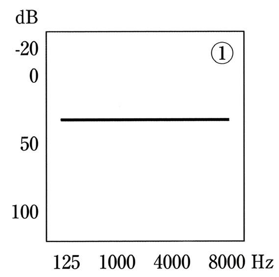
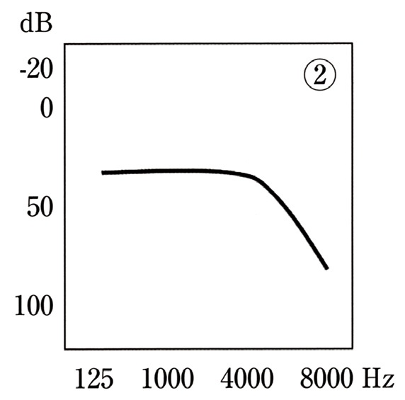
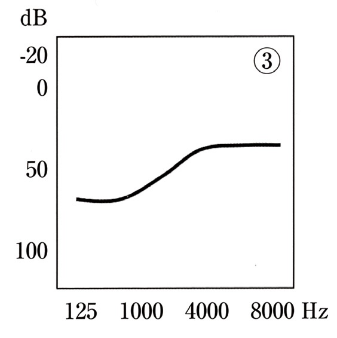
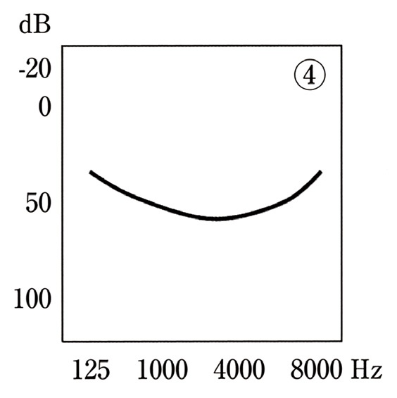
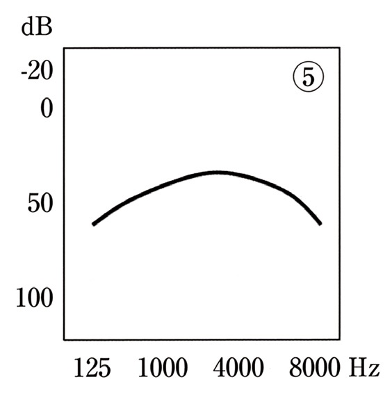
| 選択肢 | 解説 |
|---|---|
| ａ ① | 全周波数が一様に約35dB低下する「水平型」。滲出性中耳炎・耳硬化症などの伝音難聴や内耳の血管条性障害で見られる型で、加齢に特徴的ではない。 |
| ◯ ｂ ② | ◯ 低音〜中音は保たれ、4,000Hz以降で急激に落ちる「高音漸傾（急墜）型」。蝸牛基底回転（高音担当）の有毛細胞から失われる老人性難聴の典型である。会話の母音は届くが子音が落ちるので、「聞こえるが聞き取れない」という訴えになる。 |
| ｃ ③ | 低音が悪く高音に向かって改善する「低音障害型（上昇型）」。Ménière病・急性低音障害型感音難聴の型で、老人性難聴とは正反対である。 |
| ｄ ④ | 中音域が最も悪い「谷（dip）型」。先天性難聴の一部などで見られる特殊な型で、加齢では生じない。 |
| ｅ ⑤ | 低音と高音が悪く中音域が保たれる「山型」。これも加齢に典型的な形ではない。 |
| 音 | 主な周波数 | 老人性難聴での聞こえ |
|---|---|---|
| 母音（ア・イ・ウ・エ・オ） | 低〜中音（250〜1,000Hz） | よく届く＝「声は聞こえる」 |
| 子音（サ・カ・ハ・タ行） | 高音（2,000〜4,000Hz以上） | 落ちる＝「何と言ったか分からない」 |
| 疾患 | めまいを繰り返す | 難聴を伴う |
|---|---|---|
| Ménière病 | ○ | ○ |
| BPPV | ○ | × |
| 前庭神経炎 | ×（一回きり） | × |
| 突発性難聴 | ×（一回きり） | ○ |
| 騒音性難聴・耳硬化症 | × | ○ |
| 聴神経腫瘍 | ×（持続するふらつき） | ○（進行性） |
| 選択肢 | 解説 |
|---|---|
| ａ 耳硬化症 | アブミ骨底が卵円窓に固着して起こる進行性の伝音難聴。若〜中年女性に多く、両側性のことが多い。めまいは伴わない。オージオグラムでは2,000Hzの骨導dip（Carhart notch）が特徴。 |
| ◯ ｂ Ménière病 | ◯ 内リンパ水腫により「めまい発作を反復し、そのたびに難聴・耳鳴・耳閉感を伴う」。発作間欠期には聴力が回復する（変動性）のも特徴で、「繰り返す」「めまい」「難聴」の3語がそのまま定義になる。 |
| ｃ 前庭神経炎 | 激しいめまいが数日続くが「一回きり」で、難聴を伴わない。「繰り返す」でも「難聴」でもない点で二重に外れる。 |
| ｄ 騒音性難聴 | 両側性・進行性の感音難聴だが、めまいは伴わない。内耳のうち蝸牛だけが選択的に障害されるためである。 |
| ｅ 良性発作性頭位眩暈症 | めまいは繰り返すが、難聴は伴わない。「めまいを繰り返す」だけならBPPVも当てはまるので、決め手は「難聴があるか」である。 |
| 項目 | 内容 |
|---|---|
| 病態 | アブミ骨底が卵円窓に骨性に固着し、振動が内耳へ伝わらなくなる |
| 好発 | 20〜40歳代の女性。妊娠を契機に増悪 |
| 難聴 | 両側性・進行性の伝音難聴（後期は混合性） |
| 特徴的所見 | Carhart notch（2,000Hzの骨導dip）・アブミ骨筋反射の消失・鼓膜は正常 |
| 治療 | アブミ骨手術（人工アブミ骨）／補聴器 |
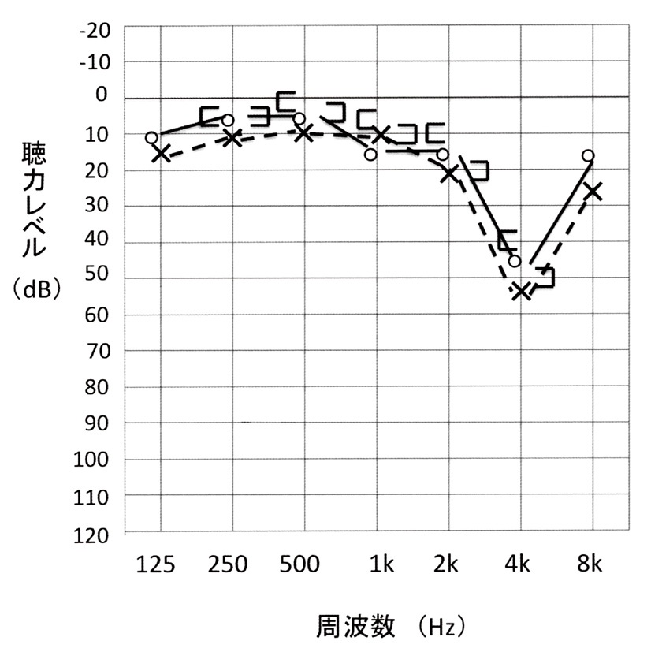
| 選択肢 | 解説 |
|---|---|
| ◯ ａ C5 dipがみられる。 | ◯ 両耳とも125〜2,000Hzは5〜15dBと正常なのに、4,000Hzで45〜55dBへ落ち込み、8,000Hzでは15〜25dBまで回復している。これがC5 dip（4,000Hzの限局した落ち込み）で、骨導も気導に一致しているので感音難聴＝騒音性難聴である。 |
| ｂ 気導骨導差がみられる。 | 骨導のマーカーは気導の線にぴったり重なっており、気骨導差はない。気骨導差があれば伝音成分がある＝中耳の病変を意味する。 |
| ｃ 補充現象が陽性である。 | 補充現象は内耳性難聴で陽性になり、騒音性難聴でも実際に陽性である。しかし補充現象は純音聴力検査では判定できない——ABLB検査（両耳交互ラウドネスバランス）やSISI検査など別の検査が必要である。「オージオグラムから読み取れること」を問われている点に注意。 |
| ｄ めまいを伴うことが多い。 | 騒音性難聴は蝸牛だけが選択的に障害されるのでめまいは伴わない。またこれもオージオグラムから読める情報ではない。 |
| ｅ 語音明瞭度が著しく障害される。 | 会話音域（500〜2,000Hz）が正常に保たれているので、語音明瞭度はほとんど落ちない。だからこそ本人は日常会話に困らず、健診で初めて指摘されることになる。 |
| 検査 | 方法 | 判定 |
|---|---|---|
| ABLB検査（両耳交互ラウドネスバランス） | 一側性難聴で、両耳に交互に音を提示し「同じ大きさに聞こえる」レベルを比べる | 強い音で左右の差が縮まる＝補充現象陽性 |
| SISI検査 | 連続音にごく小さな（1dB）強度変化を混ぜて検出できるか見る | スコアが高い（70%以上）＝内耳性 |
| 自記オージオメトリ | 連続音と断続音の閾値を自己追跡 | Ⅱ型＝内耳性、Ⅲ/Ⅳ型＝後迷路性、Ⅴ型＝機能性 |
| アブミ骨筋反射 | 反射閾値を測る | 難聴の程度の割に反射閾値が低い＝補充現象を示唆 |
| 選択肢 | 解説 |
|---|---|
| ａ 伝音性である。 | 感音性である。傷むのは蝸牛の有毛細胞で、鼓膜も耳小骨も正常なので気骨導差は出ない。 |
| ◯ ｂ 両側性に生じる。 | ◯ 工場の騒音は空間全体に広がっており、両耳が等しく曝露される。したがって両側対称性に進行する。明らかな左右差があれば、騒音以外の原因（聴神経腫瘍・突発性難聴・ムンプス難聴）を疑って精査する。 |
| ｃ 聴力は回復する。 | 回復しない。曝露直後の一時的閾値上昇（TTS）は休息で戻るが、曝露を繰り返して有毛細胞が脱落すれば永久的閾値上昇（PTS）となり不可逆。 |
| ｄ 1,000Hz中心の聴力低下が生じる。 | 4,000Hz（C5 dip）が中心である。1,000Hzは会話音域で、初期にはむしろよく保たれる。 |
| ｅ 発症早期に日常会話の中で気付かれることが多い。 | 気付かれない。初期の障害は4,000Hzに限られ、会話音域（500〜2,000Hz）は正常なので、本人は日常会話に不自由を感じない。だから定期健康診断（選別聴力検査）で早期に拾う必要がある。 |
| 所見 | 示すこと | 対応 |
|---|---|---|
| 両側対称性の感音難聴 | 全身・環境要因（加齢・騒音・薬剤・遺伝） | 原因の除去と予防 |
| 一側性・左右差のある感音難聴 | 局所の病変（聴神経腫瘍・突発性難聴・ムンプス・外リンパ瘻） | 造影MRIを含む精査 |
| 選択肢 | 解説 |
|---|---|
| ａ 耳 鳴 | 最も早期から出る症状。内耳道の中で蝸牛神経が圧迫されると、入力の欠損を中枢が「音」として埋めるため耳鳴が生じる。 |
| ｂ 難 聴 | 初発症状として最も多い。一側性・進行性の感音難聴（後迷路性）で、純音閾値から予想されるより語音明瞭度が悪いのが特徴。 |
| ｃ めまい | 腫瘍の発生母地が前庭神経なので、平衡障害・ふらつきが出る。ゆっくり進むため中枢が代償し、激しい回転性めまいにはなりにくいが、「考えにくい」とまでは言えない。 |
| ｄ 顔面神経麻痺 | 顔面神経も内耳道の中を通っているので、理屈のうえでは起こりうる。ただし顔面神経は圧迫に強く、実際に麻痺が出るのは腫瘍が相当大きくなってからで、早期には稀である。「内耳道を通る神経かどうか」で見れば消せない選択肢である。 |
| ◯ ｅ 顔面の感覚低下 | ◯ 三叉神経は内耳道を通らない。三叉神経は橋の外側から出てMeckel腔（三叉神経節）へ向かうので、腫瘍が内耳道を越えて小脳橋角部へ大きく張り出して初めて圧迫される。＝「内耳道に限局した」段階では起こらない。角膜反射の減弱・顔面のしびれは「腫瘍が大きくなったサイン」である。 |
| 段階 | 大きさの目安 | 症状 |
|---|---|---|
| 内耳道内限局 | 〜10mm | 一側性の難聴・耳鳴・軽いふらつき |
| 小脳橋角部へ進展 | 10〜20mm | ＋顔面の感覚低下・角膜反射減弱（三叉神経） |
| 小脳を圧迫 | 20〜30mm | ＋同側の小脳性運動失調 |
| 脳幹を圧迫 | 30mm〜 | ＋顔面神経麻痺・下位脳神経麻痺・水頭症・頭蓋内圧亢進 |
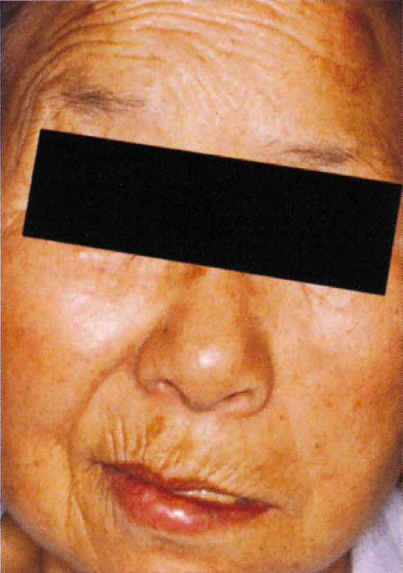
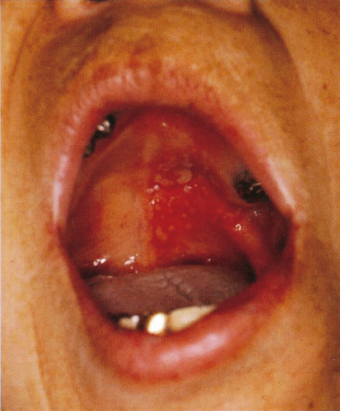
| 選択肢 | 解説 |
|---|---|
| ａ ジドブジン〈AZT〉 | HIVに対する核酸系逆転写酵素阻害薬。ヘルペスウイルス科には無効である。 |
| ｂ ミコナゾール | アゾール系抗真菌薬。口腔カンジダ症・外耳道真菌症などに用いる。口腔内に白苔があればカンジダを考えるが、本例は水疱・びらんである。 |
| ◯ ｃ アシクロビル | ◯ 単純ヘルペスウイルス・水痘帯状疱疹ウイルスに有効な核酸類似体。ウイルスのチミジンキナーゼでリン酸化されて初めて活性化するため、感染細胞に選択的に働く。Ramsay Hunt症候群では副腎皮質ステロイドと併用し、発症72時間以内の開始を目指す。経口ならバラシクロビル、重症例は点滴静注を選ぶ。 |
| ｄ ガンシクロビル | サイトメガロウイルス感染症の治療薬。骨髄抑制が強く、CMV網膜炎・移植後CMV感染症などに限って用いる。VZVには第一選択にならない。 |
| ｅ バンコマイシン塩酸塩 | MRSAなどグラム陽性菌に対する抗菌薬。ウイルスには無効である。 |
| 薬剤 | 主な標的 | 備考 |
|---|---|---|
| アシクロビル／バラシクロビル／ファムシクロビル | HSV・VZV | 帯状疱疹・Ramsay Hunt・ヘルペス脳炎。腎排泄 |
| ガンシクロビル／バルガンシクロビル | サイトメガロウイルス | 骨髄抑制が強い |
| オセルタミビル／バロキサビル | インフルエンザ | 発症48時間以内 |
| ジドブジン等の抗レトロウイルス薬 | HIV | 多剤併用（ART） |
| 選択肢 | 解説 |
|---|---|
| ａ 難聴を伴う。 | 伴わない。半規管の中で耳石が転がるだけで蝸牛には影響がない。難聴があればMénière病・突発性難聴・聴神経腫瘍を考える。 |
| ｂ 眼振は出現しない。 | むしろ眼振の存在が診断の決め手である。頭位変換眼振検査で、潜時のある回旋性眼振が出現し、20〜30秒で減衰する。Frenzel眼鏡で固視を外さないと見えない点に注意。 |
| ◯ ｃ 寝返りで誘発される。 | ◯ 頭位を変える動作すべてが誘因になる。寝返り・起き上がり・上を向く・下を向く・洗髪や歯科治療で頭を倒す——重力に対する頭の向きが変わると半規管内の耳石が動くためである。「特定の頭位で必ず起こり、その頭位を避ければ起こらない」という再現性が問診上の決め手になる。 |
| ｄ 非回転性のめまいである。 | 典型的には回転性（ぐるぐる回る）である。半規管が「回転している」という誤信号を送るためで、非回転性（ふわふわする浮動感）が主体なら両側前庭障害・起立性調節障害・中枢性・心因性などを考える。 |
| ｅ 一過性の意識消失を伴う。 | 意識は常に清明。意識消失を伴えば失神であり、心原性（不整脈・大動脈弁狭窄症）・起立性低血圧・血管迷走神経反射などを鑑別する別の病態になる。 |
| めまい（vertigo/dizziness） | 失神（syncope） | |
|---|---|---|
| 意識 | 保たれる | 消失する |
| 訴え方 | 「回る」「ふらつく」 | 「目の前が暗くなった」「気が遠くなった」 |
| 主な原因 | 前庭（末梢/中枢） | 心原性（不整脈・弁膜症）・起立性低血圧・神経調節性 |
| 危険度 | 中枢性なら緊急 | 心原性失神は突然死のリスク＝心電図・心エコーへ |
| 選択肢 | 解説 |
|---|---|
| ａ 前庭神経炎 | 激しいめまいが数日〜数週間持続するのが特徴で、「数十秒で軽快する」経過とは合わない。また眼振は頭位によらず一方向性に持続する自発眼振である。 |
| ｂ Ménière病 | 10分〜数時間持続し、難聴・耳鳴・耳閉感を伴う。本例は「耳鳴、難聴を認めない」と明記され、持続も数十秒である。 |
| ｃ 起立性低血圧 | 臥位から立位への「体位」変換で血圧が下がり、眼前暗黒感・ふらつき・失神を起こす。回転性めまいでも眼振でもない。 |
| ｄ 一過性脳虚血発作 | 椎骨脳底動脈系のTIAならめまいを起こしうるが、複視・構音障害・嚥下障害・運動麻痺・感覚障害など他の神経症状を伴うのが普通で、頭位変換で規則正しく誘発される回旋性眼振は説明できない。 |
| ◯ ｅ 良性発作性頭位眩暈症 | ◯ 頭位変換眼振検査の所見が決定的。「左下懸垂頭位で時計回り、右側臥位で反時計回り」＝頭位によって向きが変わる回旋性眼振で、しかも「減衰する」。これは半規管内を耳石が移動していることの直接の証拠である。難聴なし・数十秒で軽快・他の神経症状なしという条件もすべて一致する。 |
| 性質 | 末梢性 | 中枢性 |
|---|---|---|
| 方向 | 一定（一方向性）・水平回旋性 | 注視方向で変わる・純粋な垂直性や回旋性 |
| 固視抑制 | あり（見つめると消える） | なし |
| 潜時・減衰・疲労 | あり | なし |
| 随伴症状 | 難聴・耳鳴（内耳性のとき） | 複視・構音障害・運動失調・感覚障害 |
| めまいの強さ | 激しい | 比較的軽いのに歩けない（乖離） |
| 選択肢 | 解説 |
|---|---|
| ａ EBウイルス感染症 | 伝染性単核球症（発熱・咽頭痛・リンパ節腫脹・異型リンパ球）が典型。外耳道の皮疹も顔面神経麻痺も起こさない。 |
| ｂ アデノウイルス感染症 | 咽頭結膜熱・流行性角結膜炎。脳神経節に潜伏せず、水疱も作らない。 |
| ｃ サイトメガロウイルス感染症 | 先天性感染で難聴（先天性難聴の最多原因）を起こすが、後天性に外耳道の皮疹＋顔面神経麻痺という形は取らない。成人では免疫不全時の網膜炎・肺炎・腸炎が問題になる。 |
| ｄ 単純ヘルペスウイルス感染症 | Bell麻痺の原因として想定されているが、Bell麻痺では皮疹が出ず、難聴・めまいも伴わない。本例は皮疹と第Ⅷ脳神経症状がそろっている。 |
| ◯ ｅ 水痘・帯状疱疹ウイルス感染症 | ◯ Ramsay Hunt症候群（耳性帯状疱疹）。右耳痛（前駆）→右外耳道入口部の皮疹→右顔面神経麻痺→右難聴・耳鳴・回転性めまいという三徴が完全にそろっている。膝神経節に潜伏したVZVの再活性化が原因である。 |
| 部位（神経節） | 名称 | 注意すべき合併症 |
|---|---|---|
| 耳介・外耳道（膝神経節） | Ramsay Hunt症候群 | 顔面神経麻痺・感音難聴・めまい |
| 前額・眼瞼（三叉神経第1枝） | 眼部帯状疱疹 | 角膜炎・虹彩毛様体炎・急性網膜壊死（Hutchinson徴候に注意） |
| 胸背部（肋間神経） | 通常の帯状疱疹 | 帯状疱疹後神経痛（高齢者ほど多い） |
| 仙髄（S2-4） | 仙骨部帯状疱疹 | 排尿障害 |
| 汎発性 | 播種性帯状疱疹 | 免疫不全を疑う（悪性腫瘍・HIV・免疫抑制薬） |
| 選択肢 | 解説 |
|---|---|
| ａ 補充現象が陽性である。 | 補充現象は「蝸牛（内耳）の障害」で陽性になる現象。前庭神経炎では蝸牛は無事で難聴そのものが無いので、補充現象を論じる前提が成立しない。 |
| ｂ 頭位変換眼振を認める。 | 頭位変換眼振はBPPVの所見である。前庭神経炎の眼振は「頭位に関係なく健側向きに出続ける自発眼振」で、頭位を変えても向きは変わらない。 |
| ｃ 低音障害型感音難聴を伴う。 | 低音障害型感音難聴はMénière病・急性低音障害型感音難聴の所見。前庭神経炎では蝸牛神経が保たれるので難聴を伴わない——これが定義的な特徴である。 |
| ｄ 温度眼振検査は正常である。 | 患側の反応が高度に低下する（半規管麻痺）。温度眼振検査は左右の外側半規管機能を個別に評価する検査で、前庭神経炎ではこれが診断の裏づけになる。 |
| ◯ ｅ めまいは数日から2か月程度続く。 | ◯ 急性期の激しい回転性めまいは数日で峠を越えるが、ふらつきや動作時の不安定感は数週間〜2か月程度残る。中枢が左右の前庭入力の差を埋め合わせる（前庭代償）のに時間がかかるためで、早期からの前庭リハビリテーションが回復を早める。 |
| 項目 | 内容 |
|---|---|
| 原理 | 外耳道に冷水（30℃）または温水（44℃）を入れて外側半規管の内リンパに温度差による対流を起こし、人工的に眼振を誘発する |
| 眼振の向き | 冷水＝反対側向き／温水＝同側向き（COWS：Cold Opposite, Warm Same） |
| わかること | 左右の外側半規管を「別々に」評価できる唯一の検査。患側の反応低下＝半規管麻痺（CP） |
| 異常となる疾患 | 前庭神経炎（患側低下）・Ménière病（患側低下）・聴神経腫瘍（患側低下）・中毒性平衡障害（両側低下） |
| 注意 | 鼓膜穿孔があると冷水は使えない（冷気法を用いる） |
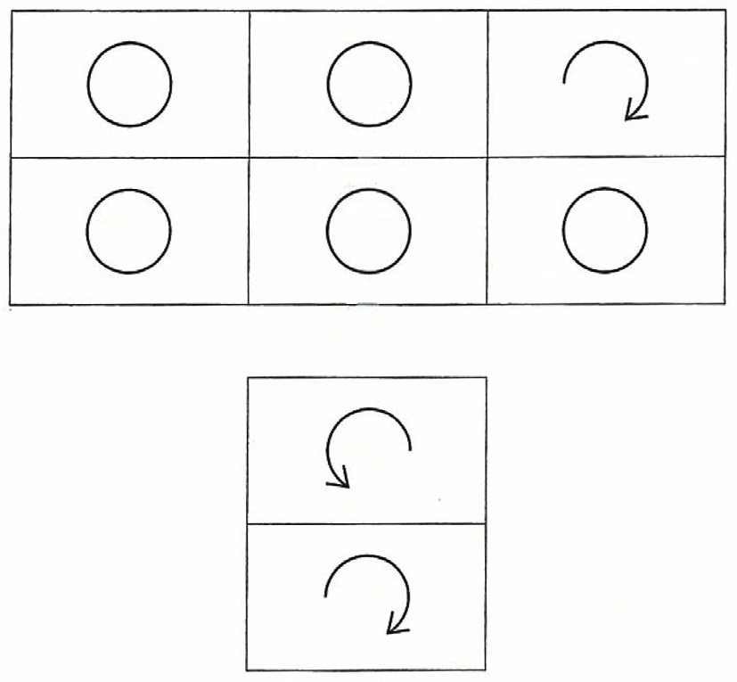
| 選択肢 | 解説 |
|---|---|
| ◯ ａ 理学療法 | ◯ BPPVに対する耳石置換法（Epley法・Lempert法）は理学療法に分類される。頭を決まった順序で動かして、半規管に迷入した耳石を卵形囊へ戻す手技である。薬を使わずに原因そのものを取り除ける唯一の治療で、前庭リハビリテーション（Brandt-Daroff法など）も含まれる。 |
| ｂ 利尿薬投与 | Ménière病（内リンパ水腫）の治療。本例は難聴も耳鳴もなく、純音聴力検査も正常。 |
| ｃ 迷路破壊術 | 難治性Ménière病の最終手段で、前庭機能とともに聴力も失われる。聴力が実用にならない耳に限って行う。BPPVに用いるものではない。 |
| ｄ 内リンパ囊開放術 | 保存治療に抵抗するMénière病の手術。内リンパ水腫を減圧する目的であり、BPPVには関係がない。 |
| ｅ 副腎皮質ステロイド投与 | 突発性難聴・前庭神経炎・Ramsay Hunt症候群の急性期に用いる。いずれも炎症・浮腫を想定した治療で、機械的に耳石が動いて起こるBPPVには適応がない。 |
| 治療 | BPPVでの位置づけ |
|---|---|
| 耳石置換法（理学療法） | 第一選択。原因（耳石の位置）を直接取り除く |
| 抗めまい薬・制吐薬 | 急性期に悪心が強いときの対症療法のみ。長期使用は前庭代償を妨げるので避ける |
| 副腎皮質ステロイド | 適応なし（炎症性疾患ではない） |
| 利尿薬 | 適応なし（内リンパ水腫ではない） |
| 手術 | きわめて難治な例に半規管遮断術。通常は不要 |
| 選択肢 | 解説 |
|---|---|
| ◯ ａ 風 疹 | ◯ 妊娠初期の母体感染で先天性風疹症候群を起こし、内耳（コルチ器）の障害による感音難聴をきたす。三徴は難聴・白内障・心奇形（動脈管開存・肺動脈狭窄）。後天性の風疹でも稀に内耳炎を起こしうる。 |
| ｂ 突発性発疹 | ヒトヘルペスウイルス6/7による乳児の疾患。高熱が3日ほど続き、解熱とともに発疹が出るのが典型で、内耳障害は起こさない。合併症としては熱性けいれんが問題になる。 |
| ｃ 急性灰白髄炎 | ポリオウイルスが脊髄前角細胞を侵し、弛緩性麻痺（急性灰白髄炎）を起こす。運動ニューロンの疾患であり、内耳を侵さない。 |
| ◯ ｄ 流行性耳下腺炎 | ◯ ムンプスウイルスが血行性に内耳へ達し、コルチ器と血管条を破壊する（ムンプス難聴）。一側性・高度・不可逆の感音難聴となり、小児の後天性一側性高度難聴の最大の原因である。 |
| ◯ ｅ サイトメガロウイルス感染症 | ◯ 先天性サイトメガロウイルス感染は先天性難聴の最多原因。出生時のスクリーニングを通過しても後から発症・進行する（遅発性・進行性）のが特徴で、長期の聴力フォローが必要になる。小頭症・脳内石灰化・肝脾腫・血小板減少などを伴うこともある。 |
| 病原体 | 時期 | 難聴の特徴 |
|---|---|---|
| サイトメガロウイルス | 先天性 | 先天性難聴の最多原因。両側・進行性・遅発性 |
| 風疹ウイルス | 先天性 | 両側性。白内障・心奇形を伴う（先天性風疹症候群） |
| ムンプスウイルス | 後天性（小児） | 一側性・高度・不可逆 |
| 細菌性髄膜炎 | 後天性（乳幼児） | 両側性・高度。蝸牛骨化のため人工内耳は急ぐ |
| 水痘・帯状疱疹ウイルス | 後天性 | Ramsay Hunt症候群（顔面神経麻痺と同時） |
| 梅毒（先天梅毒） | 先天性・後天性 | 遅発性の両側感音難聴（Hutchinson三徴の一つ） |
| 選択肢 | 解説 |
|---|---|
| ◯ ａ 近づいて普通の大きさの声で話す。 | ◯ 距離が近いほど音は届き、口元や表情も見えるので読話が助けになる。老人性難聴では補充現象があるため、大声はかえって「うるさい」「響いて苦しい」と感じられる。正面から、近づいて、普通の大きさで、ややゆっくり、低めの声でが原則である。 |
| ｂ 補聴器のボリュームをできるだけ上げる。 | 補充現象があるので、上げすぎると不快になり装用を拒否する原因になる。補聴器は出力制限（圧縮）をかけて、専門家が個々の聴力に合わせて調整（フィッティング）するもので、音量を最大にする道具ではない。 |
| ◯ ｃ 患者の興味のある話題を選んで話しかける。 | ◯ 語音明瞭度が落ちていても、文脈があれば聞き取りを補える。興味のある話題・馴染みのある語彙は予測が働き、理解しやすい。さらに難聴による社会的孤立・抑うつ・認知機能低下を防ぐという意味でも、会話の機会を維持することは治療的である。 |
| ｄ 高い音のチャイムで食事の時間を知らせる。 | 老人性難聴で最初に失われるのが高音である。高い音のチャイムは最も聞こえにくい音で、合図としては不適切。低めの音・光や振動による表示・直接の声かけを選ぶ。 |
| ｅ 音声を介したコミュニケーションを避ける。 | 避けてはいけない。音声コミュニケーションを断つことは社会的孤立を招き、抑うつや認知機能低下のリスクを高める。補聴器・環境調整・話し方の工夫で「続けられるようにする」のが正しい対応である。 |
| 場面 | すること | 避けること |
|---|---|---|
| 話し方 | 正面から・近づいて・普通の大きさ・ややゆっくり・低めの声・短い文で | 大声・早口・マスク越し・後ろから・複数人が同時に話す |
| 内容 | 話題を先に伝える・言い換える・要点を書いて渡す | 同じ言葉をただ繰り返す |
| 環境 | 静かな部屋・テレビを消す・明るくして口元が見えるように | 騒がしい場所・逆光 |
| 合図 | 低い音・光・振動・声かけ | 高い電子音のチャイム |
| 補聴器 | 早期導入・専門家によるフィッティング | ボリュームを最大にする・「うるさい」と言われて中止する |